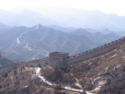
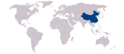

China
From Wikitravel
Contents
- For other places with the same name, see China (disambiguation).
|  | |
| Location | |
|  | |
| Flag | |
| Quick Facts | |
| Capital | Beijing |
| Government | Communist state |
| Currency | Renminbi (RMB, ¥) |
| Area | 9,596,960 km2 |
| Population | 2,321,851,888 (July 2007 est.) |
| Language | national: Mandarin (Putonghua) regional: Wu (Shanghaiese), Cantonese (Yue), Minbei (Fuzhou), Minnan (Hokkien-Taiwanese), Xiang, Gan, Hakka dialects, minority languages |
| Religion | Daoist (Taoist), Buddhist, Christian 3%-4%, Muslim 1%-2% (officially atheist) |
| Electricity | 220V/50Hz (various plugs) |
| Calling Code | 86 |
| Internet TLD | .cn |
| Time Zone | UTC +8 |
China (中国 Zhōngguó), formally known as the People's Republic of China (中华人民共和国 Zhōnghuá Rénmín Gònghéguó) is a vast country in Eastern Asia (about the same size as the United States of America) and with the world's largest population.
With coasts on the East China Sea, Korea Bay, Yellow Sea, and South China Sea, it borders Afghanistan, Pakistan, India, Nepal, Bhutan, Myanmar, Laos and Vietnam to the South; Tajikistan, Kazakhstan and Kyrgyzstan to the West; Russia and Mongolia to the North and North Korea to the East.
[edit] Regions
- North-east - Liaoning, Jilin, Heilongjiang - Dongbei, the "rust belt"
- North - Shandong, Shanxi, Inner Mongolia, Henan, Hebei, Beijing, Tianjin - the Yellow River Basin area, historical heartland of China
- North-west - Shaanxi, Gansu, Ningxia, Qinghai, Xinjiang - grasslands and deserts, nomadic people, Islam
- South-west - Tibet, Yunnan, Guangxi, Guizhou - the exotic part, home to most of the Chinese minorities, with spectacular scenery
- Southern-central - Anhui, Sichuan, Chongqing, Hubei, Hunan, Jiangxi - farming areas
- South-east - Guangdong, Hainan, Fujian - the traditional trading center
- East - Jiangsu, Shanghai, Zhejiang - the new economic center
|
The Special Administrative Regions of Hong Kong and Macau are covered in their own articles. The island of Taiwan is claimed by the People's Republic of China (PRC) but is currently administered by the Republic of China (ROC); see the separate Taiwan article for more details. |
[edit] Cities
China has many large and famous cities. Below is a list of the nine most important to travellers. Other cities are listed under their specific regional section. See the Dynasties and capitals section further down the page for a list of China's many previous capitals.
- Beijing (北京) - capital city, cultural center, and host of the 2008 Olympics
- Guangzhou (广州) - one of China's most prosperous and liberal cities
- Guilin (桂林) - popular destination for both Chinese and foreign tourists, sensational mountain/river scenery
- Hangzhou (杭州) - famously beautiful city, major center for the silk industry
- Kunming (昆明) - capital of Yunnan, gateway to the villages of the ethnic minorities
- Nanjing (南京) - a renowned historical and cultural city with many historic relics
- Shanghai (上海) - famous for its riverside scenery, China's largest city is a major commercial center with many shopping opportunities
- Suzhou (苏州) - "Venice of the East", old city, famous for canals and gardens
- Xi'an (西安) - terminus of the ancient Silk Road, and home of the terracotta warriors
[edit] Other destinations
Some of the most famous tourist attractions in China are:
- Great Wall of China (万里长城)
- Tibet
- Silk Road (丝绸之路)
- Hainan island, tropical paradise
China has dozens of UNESCO World Heritage sites.
[edit] Sacred sites
For sacred mountains, see the next section.
Several sites in China have famous Buddhist art:
- Yungang Grottoes (near Datong) in Shanxi Province - more than 51,000 Buddhist carvings, dating back 1,500 years, in the recesses and caves of the Yangang Valley mountainsides
- Mogao Caves (near Dunhuang) in Gansu province - art and manuscripts dating back to the 4th century
- Dazu Rock Carvings near Chongqing, dating from the 7-13th century
- Longmen Grottoes - near Luoyang, 5-10th century
[edit] Mountains
China (including Tibet) is home to many sacred mountains.
The Five Great Mountains (五岳 wǔyuè), associated with Taoism:
- Mount Tai (泰山), Shandong Province (1,545 meters)
- Mount Hua (华山), Shaanxi Province (1,997 meters)
- Mount Heng (Hunan) (衡山), Hunan Province (1,290 meters)
- Mount Heng (Shanxi) (恒山), Shanxi Province (2,017 meters)
- Mount Song (嵩山）, Henan Province, where the famous Shaolin Temple (少林寺) is located (1,494 meters)
The Four Sacred Mountains (四大佛教名山 sìdà fójiào míngshān), associated with Buddhism:
- Mount Emei (峨嵋山), Sichuan Province (3,099 meters)
- Mount Jiuhua (九华山), Anhui Province (1,342 meters)
- Mount Putuo (普陀山), Zhejiang Province (297 meters, an island)
- Mount Wutai (五台山), Shanxi Province (3,058 meters)
The three main sacred mountains of Tibetan Buddhism:
- Mount Kailash, Tibet (5,656 meters), known as Gang Rinpoche in Tibetan, is also one of the holiest mountains in Hinduism and is visited by many Hindu pilgrims
- Kawa Karpo
- Amnye Machen
There are also several other well-known mountains. In China, many mountains have temples, even if they are not especially sacred sites:
- Mount Qingcheng (青城山), Sichuan Province
- Mount Longhu (龙虎山), Jiangxi Province
- Mount Lao (崂山), Shandong Province
- Mount Wuyi (武夷山), Fujian Province, a major tourist/scenic site with many tea plantations
- Mount Everest, on the Tibet/Nepal border, world's highest mountain
- Mount Huang (黄山) (Yellow Mountain), in Anhui province, with scenery and temples
- Mount Wudang (武当山), near Danjiangkou in Hubei, famous for kung fu
- Changbaishan/Paektusan (Chinese:长白山 Korean:백두산), the most sacred mountain to ethnic Manchus and Koreans, located on the border with China and North Korea.
[edit] Itineraries
Some itineraries cover trips that are entirely within China:
- A week near Hong Kong
- Along the Yangtze river
- Along the Yellow river
- Along the Grand Canal
- Overland Kunming to Hong Kong
- Yunnan tourist trail
- Overland to Tibet
- Long March
Others are partly in China:
- Europe to South Asia over land
- Overland from Singapore to Shanghai
- Silk Road - ancient caravan route from China to Europe
- Karakoram Highway - Western China to Pakistan through the Himalayas
- On the trail of Marco Polo
[edit] Understand
[edit] History
The first civilizations in China arose in the Yangtse and Yellow river valleys at about the same time as Mesopotamia, Egypt and India developed their first civilizations.
For centuries China stood as a leading civilization, outpacing the rest of the world in the arts and sciences. Paper and gunpowder, for example, are Chinese inventions and Chinese developments in astronomy, medicine, scholarship and other fields were extensive. A tomb unearthed in Changsha contained a heliocentric model of the solar system, and showed its occupant wore a bra — it is 3,200 years old.
China also explored the world and traded extensively with other nations. By the 5th-6th centuries AD, voyages to India and the Arab countries were routine. In the 15th century the Ming Dynasty fleets under Admiral Zheng He reached as far as East Africa. However, China has always been inward-looking. China is the "middle kingdom". The Emperor did not receive ambassadors, only tribute bearers. Around 1425, China turned inward with a vengeance. Records of the great trading voyages were destroyed and the ships allowed to rot.
When Western traders arrived in the 16th century, China was initially hostile to them. The first Western base was Portugal's colony Macau, near Canton.
The Emperor imposed various restrictions on trade, allowing Westerns to trade only at Canton (Guangzhou), only with payment in silver, and only with a government-approved monopoly of traders called the Cohong. Export of items that would break Chinese monopolies, such as tea seeds or silk worms, was strictly forbidden. Traders eventually smuggled both out, creating two of India's greatest industries. Western traders resented these restrictions and struggled to interest the Chinese in Western goods, without notable success.
By the 19th century, various Western powers had taken various pieces of China and trade was well established. The relationship, however, was fraught with difficulties. Westerners tended to see China as corrupt and decadent. Chinese often viewed the West as greedy and contemptible.
The great issue, however, was opium. For the West, the profitable commodities were "pigs and poison", indentured laborers and opium. Britain's balance of trade — paying for tea and silk in silver and being quite unable to interest Chinese in most British products — would have been disastrous without opium. However, by growing opium in India and exporting vast amounts to China, they were able to have a nice trade surplus. Some Chinese colluded in this, and made fortunes from it, but every Chinese government from the Qing to the present day has been unalterably opposed to the trade.
Several wars were fought in China in that century.
- Two Opium Wars (1839-1842 and 1856-1860) pitted China against Western powers. China quickly lost both wars. After the first one, Britain got Hong Kong island, and five "treaty ports" (Guangzhou, Xiamen, Fuzhou, Shanghai and Ningbo) were opened to Western trade; after the second, Britain got Kowloon, and inland cities such as Nanjing and Wuhan were opened to trade.
- There were several Muslim rebellions in Western China.
- The Tai Ping Rebellion (1851-1864) was led by a madman claiming to be Christ's younger brother. It was largely a peasant revolt; its program included land reform and eliminating slavery, concubinage, arranged marriage, opium, footbinding, judicial torture, and idolatry. The Qing government, with some Western help, eventually defeated them, but not before the Taiping had ruled much of China for over ten years. This was one of the bloodiest wars ever fought; only World War II killed more people.
- In 1895, China lost the Sino-Japanese war and ceded Taiwan to Japan. In addition, it had to relinquish control of Korea, which had been a tributary state of China for a long time.
Many Chinese resented various things in this period — notably missionaries, opium, grabbing Chinese land, and the extraterritoriality provisions in the "unequal treaties" that made many foreigners immune to Chinese law. To the West, of course, trade and missionaries were obviously good things, and extraterritoriality was only prudent in view of the corrupt and brutal laws in place.
The 20th century brought revolution. The empire was overthrown in 1911 and Sun Yat Sen, a doctor, nationalist, socialist and democrat, became president.
After the 1895 war Japan continued its imperial expansion in East Asia, invaded Manchuria in 1931 and conquered much of eastern China by the late 30s. China had other problems as well, such as civil unrest and major famines. In 1937, the Kuomintang and Communists signed a tenuous agreement to form a united front against Japan. However the agreement largely broke down by 1940-41 and the Communists under Mao Zedong and the Kuomintang under Chiang Kai Shek openly fought each other. Throughout the period from 1911 to 1949 various warlords fought challenges to their local power from any outsider, regardless of nationality or ideology.
After World War II, outright civil war broke out. More Chinese were killed in this than in resisting Japan. In 1949, the Communists won, causing the Kuomintang to grab the national gold reserves and imperial treasure, and then flee to Taiwan where it set it up shop and promised to recapture the Mainland.
The Communist government imposed strict controls over everyday life; basically, the Party ran everything. They also indulged in various experiments such as the Great Leap Forward, intended to industrialise China quickly, and the Cultural Revolution, aimed at changing everything by discipline and attention to Mao Zedong Thought. These failed at a disastrous cost and crippled China's economy more than anything else. The effects of the Cultural Revolution in particular can still be seen today; many traditional Chinese customs, such as the celebration of the Hungry Ghost Festival(中元节), are still thriving in Taiwan, Hong Kong, Macau and overseas Chinese communities such as those in Singapore and Malaysia, but have largely disappeared in mainland China.
Mao Zedong died in 1976 and Deng Xiaoping's came to power shortly after. After 1978, Deng gradually introduced market-oriented reforms and decentralized economic decision making. Economic output quadrupled by 2000 and is still rising at 9% a year or so, but there are still problems — serious inflation in the 80s, pollution, rural poverty, and corruption. Political controls remain tight even though economic policy continues to be relaxed, enough for China to secure admission to the World Trade Organization. October 2007 saw the official guarantees on private property, a clear step away from hardcore communism and in 2003, the Party changed its statues to accept a new category of members: "good capitalist communists."
The current president, Hu Jintao, has proclaimed a policy for a "Harmonious Society" which promises to restore balanced economic growth and to channel investment and prosperity into China's hinterlands, which have been largely left behind in the economic boom since 1978. This policy involves additional tax breaks for farmers, a rural medical insurance scheme, reduction/elimination of school tuition fees and infrastructure development to encourage investment in underdeveloped areas, e.g. the Beijing/Lhasa railway - a dream first put down on paper by Sun Yat Sen in the early 1900s.
[edit] Dynasties and capitals
Many cites have been capitals of China, or of various smaller states in periods when China was split up. Beijing and Nanjing mean Northern capital and Southern capital respectively; each has been the capital several times.
- Legend has it that the Three Sovereigns and Five Emperors, who were mythical God-like kings, ruled China from about 2852 BC to 2205 BC.
- The earliest dynasties — the semi-legendary Xia (2100 BC to 1600 BC) and the first historically confirmed dynasty, the Shang (1700 BC to 1027 BC) — ruled only the Yellow River valley and had their capital near Anyang in Henan.
- The Zhou Dynasty, 1027-221 BC, had their first capital at Hao near modern Xi'an. After a military defeat in 771 BC, they continued as the Eastern Zhou with capital Luoyang. The Zhou is the longest dynasty in Chinese history, lasting about 800 years.
- The Qin Dynasty, 221-206 BC, were the first to unite an area anything like all of China. Their capital was at Xianyang. Our word "China" probably comes from the Wade-Giles romanisation Ch'in. In fact, in languages of India, China has long been called "Chin".
- The Han Dynasty, 206 BC to 220 AD, had its capitals at Xi'an (Western Han) and Luoyang (Eastern Han). This was the period of the first Silk Road trade. Chinese still use Han as the name of their largest ethnic group. The Han is considered by most Chinese to be the first high point in Chinese civilisation.
- Then for a few hundred years, 220-618, China was not united. Capitals of various important states included Luoyang, Nanjing and Suzhou.
- The Tang Dynasty, 618-907, had its capitals at Xi'an and Luoyang. The Tang is considered by most Chinese to be the second high point in Chinese civilisation, and Chinatowns overseas are often known as "Street of the Tang People" (唐人街) in Chinese
- The Song dynasty, 979-1279, had its capital at Kaifeng, and later, as the Southern Soong, in Hangzhou. Marco Polo, who was in Hangzhou a few years after the Mongols conquered the Song, describes it as one of the richest and most beautiful cities on Earth.
- The Yuan (Mongol) dynasty, 1279-1368, used the area that is now Beijing as their capital. Polo mentions it under the name Canbulac, the Khan's camp.
- The Ming dynasty, 1368-1644, initially had Nanjing as their capital then moved the capital to Beijing. They built most of the famous buildings in Beijing — Forbidden City, Temple of Heaven and so on.
- The Qing (Manchu) dynasty, 1644-1911, used Beijing as the capital of China but they had their own Manchu capital at Shenyang.
- The Republic of China, who ruled China 1911-1949, moved the capital back to Nanjing. Today they control only Taiwan, and Taipei is their "temporary capital". During the Second World War, Chongqing was also a temporary capital.
- Beijing has been the capital of China since the Communist victory in the civil war, 1949.
[edit] People
China is a very diverse place with large variations in culture, language, customs, and economic levels. The economic landscape is particularly diverse. The major cities such as Beijing, Guangzhou and Shanghai are rich and modern. However, more than half the population, some 800 million rural residents, still live as peasants, farming with manual labour or draft animals. Many of these men and women live in severe poverty. A Chinese government estimate as of 2005 had 90 million living on under ¥924 (US$112) a year; 26 million were under the official poverty line, ¥668 (US$81) a year.
China has recently experienced a huge economic explosion, and many rural residents (over 200 million by some estimates) have moved to the cities to become migrant workers, or sometimes businessmen. This has created a two-tier social structure in most cities; the established urban dwellers, and people from rural areas, the latter group often face discrimination and mistreatment from the former.
Some foreigners who are not familiar with Chinese customs and habits may find certain Chinese manners to be unrefined, coarse or inappropriate. However, these behaviors are usually benign in nature. The lesson is this: keep an open mind; if you do this, you'll find that people tend to be warm and friendly.
Behaviors that may be initially jarring include:
- Spitting: in the street, shops, supermarkets, hotel lobbies, hallways, or even in restaurants and hospitals. Traditional Chinese medical thought believes that it is unhealthy to swallow phlegm.
- Caucasians will find that catcalls of "hello" or "laowai" are common: lǎowài (老外) literally means "old (and thus respected) outsider", a colloquial term for "foreigner"; the more formal term is wàiguórén (外国人). Calls of "laowai" are ubiquitous outside of the big cities (and even there, occasionally); these calls will come from just about anyone, of any age, and can occur many times in any given day.
- Staring: common through most of the country. The staring usually originates out of sheer curiosity, almost never out of hostility.
- Loud conversations, discussions or public arguments: These are very common and sometimes take place at inappropriate times and/or at inappropriate places. Full-blown fights involving physical violence are less common but do occur with a fair degree of frequency. If you witness such an event, do not get involved.
- Pushing, shoving and/or jumping queues: this often occurs anywhere where there are queues, particularly at train stations.
- General disregard of local and/or national laws especially "No Smoking" signs.
Some long-time residents say it's getting worse, others say the opposite. The cause is new migrants from the countryside who are unused to city life. Some department stores put attendants at the foot of each escalator to keep folks from stopping to have a look-see as soon as they alight - when the escalator behind them is fully packed. In the same department store, others gape at that row of magic steel doors that open and close - and every time they open, it's never the same people.
On the whole, however, this a people who love a good laugh and because there are so many ethnic groups, they are very used to sign language and quick to see a non-verbal joke wherever they can spot one. If you have children, bring them!
[edit] Climate
The climate is also extremely diverse, from tropical in the South to subarctic in the North. Hainan Island is roughly at the latitude of Jamaica while Harbin, one of the largest cites in the North, is at the latitude of Montreal.
There is also a wide range of terrain with mostly mountains, high plateaus, and deserts in west; while plains, deltas, and hills can be found in the east. On the border between Tibet and Nepal lies Mount Everest, at 8,850 m, being the highest point on earth. While the Turpan depression, in northwest China has the lowest point of the country, at 154 m below sea level. This is also the second lowest point on land in the world, after the Dead Sea in Israel.
[edit] Holidays
China is a huge country with endless travel opportunities. However, during holidays, millions of migrant workers return home and millions of other Chinese travel, so travelling should be planned well in advance or even reconsidered altogether. Every mode of transportation is crowded, tickets of any kind are hard to come by, it may be necessary to book well in advance (especially for those travelling from remote western China to the east coast or in the opposite direction), and travel services such as hotels raise their prices.
|
Chinese New Year Dates
|
China has three major annual holidays:
- National Day - October 1
- Chinese New Year or Spring Festival (春节 chūnjié) - late January / mid-February
- Labour Day (May Day) - May 1
These aren't one-day holidays. Workers get at least a week or two off for Chinese New Year; students get 4-6 weeks. Both groups get about a week for National Day and Labour Day.
Also, during early July millions of university students go home and in late August they return to school, jamming transportation options, especially between the east coast and the western provinces of Sichuan, Tibet, and Xinjiang.
Spring Festival is especially busy. Not only is it the longest holiday, it is also a traditional time to visit family, much as Christmas is in the West. More or less all the university students (20-odd million of them!) go home, and more or less all the migrant workers who have left their farms and villages for better pay in the cities go home. This is often the only chance they have. Everyone wants to go home, and China has a lot of "everyone"!
A complete list of Chinese festivals would be very long, since many areas or ethnic groups have their own local ones. See listings for individual towns for details. Here is a list of some of the nationally important ones not mentioned above:
- Lantern Festival - 15th day of the 1st lunar month, just after Chinese New Year, usually in February or March. In some cities, such as Quanzhou, this is a big festival with elaborate lanterns all over town.
- Qingming Festival - about April 4-6, is called "grave sweeping day" in English. Cemeteries are crowded with people who came to sweep tombs and offer sacrifices. Traffic on the way to the cemeteries becomes extremely jammed.
- Dragon Boat Festival - 5th day of the 5th lunar month, usually in June. Boat races are a traditional part of it.
- Double Seventh Festival - 7th day of the 7th lunar month, usually August, is a festival of romance, sort of a Chinese Valentine's Day.
- Mid-Autumn Festival or Moon Cake Festival - 15th day of the 8th lunar month, usually in October. People meet outside, putting food on tables and looking up at the sky while talking about life.
- Double Ninth Festival or Chongyang Festival - 9th day of the 9th lunar month, usually in October.
- Winter Solstice Festival - December 22 or 23.
[edit] Books
Non-guidebooks, either about China, or by Chinese writers.
Travel:
- The Travels of Marco Polo by Marco Polo - the Venetian traveller's stories in the Middle Kingdom (see also: On the trail of Marco Polo)
Literature:
- Winter Stars by Beatrice Lao (ISBN 988979991X) - a collection of poems born between the Alps and the Tyrrhenian
History:
- The Rape of Nanking by Iris Chang (ISBN 0140277447) - the forgotten Holocaust in WWII
- Wild Swans by Jung Chang (ISBN 0007176155) - a biography of three generations, from the warlord days to the end of Mao's era, illustrating life under China's version of nationalism and communism (banned in China)
- The Good Man of Nanking: The Diaries of John Rabe / The Good Man of Nanking by John Rabe - firsthand description of the sadistic rapes, torture and slaughter perpetrated by Japanese soldiers in WWII and Rabe's ultimate success in saving perhaps a quarter of a million lives
- The Search for Modern China by Jonathan Spence - Chinese history since 1644
- The Sextants of Beijing by Joanna Waley-Cohen - a book that summarizes recent thinking on how China was much more open and less xenophobic than often assumed
- 1421, The Year China Discovered the World by Gavin Menzies (ISBN 0553815229) - well known but well contested account of China's alleged efforts to explore and map the entire world
- 1587, A Year of No Significance by Ray Huang - describes a uneventful year in the history of Ming Dynasty China
[edit] Get in
[edit] Visas
Most travellers will need a visa. In most cases, this should be obtained from a Chinese embassy or consulate before departure. Hong Kong and Macau issue their own visas; see those guides for more information.
As of 2005, nationals of Singapore, Brunei and Japan do not need a visa to visit China for a stay of up to 15 days, regardless reason of visit.
To visit China, Hong Kong and Macau residents of Chinese origin need to apply at the China Travel Service to obtain a Home Travel Permit, a wallet sized ID card allowing multiple entries for 10 years.
|
Visa overview
|
Getting a tourist visa is easy for most passports as you don't need an invitation, which you do for business or working visas. It is expensive compared to other countries' visa fees (currently US$100 for U.S. passport holders and US$35 for some other passports). The usual tourist single-entry visa is valid for thirty days but in Hong Kong and Macau you can often get a 3 month visa. A tourist visa must be used within six months after it was issued, until recently it was within three months.
Some travellers will need a dual entry or multiple entry visa. For example, if you enter China on a single entry visa, then go to Hong Kong or Macau, you cannot re-enter mainland China without a new visa. With a multiple entry visa, you can.
Holders of most passports can easily get Chinese visas in Hong Kong or Macau, either by going to the government office themselves or paying a bit more to have a travel agent do it for them. China Travel Services handles visa processing. Currently they offer same-day service at extra cost: in by 12PM, out by 5:30PM. Next day and 3 day services are also available. Many hotels and some other travel agencies provide this service as well. Visas may also be obtained from the China Travel Service desk at Hong Kong Airport [1]
Obtaining a visa on arrival is possible, but usually only for the Shenzhen or Zhuhai Special Economic Zones. For example when crossing from Hong Kong to Shenzhen at Lo Wu KCR station a five day Shenzhen only visa can be obtained during extended office hours on the spot for HK$150 (Oct 2007 price) for passport holders of many nationalities, for example Irish.
However there may be restrictions on visas for political reasons and these vary over time. For example:
- As of mid 2004, Nigerians could not get visas in Hong Kong, presumably because the Chinese Government was upset that Nigeria extended diplomatic recognition to Taiwan.
- Americans could no longer get Shenzhen-only visas at the border, presumably because the Chinese Government was irritated by US fingerprinting of Chinese travellers.
- British nationals could no longer get Shenzhen-only visas at the border. (In February 2007 British passport holders can get a Shenzhen visa, although they pay around HK$450 for it.) In August 2007 an enquiry to the Chinese Embassy, London denied the existance of this type of visa.
- As of mid-2006, South Africans were having trouble with visas.
- Indian nationals are limited to 10 or 15 day tourist visas, and have to show US$100 per day of visa validity in the form of traveller's checks (US$1000 and US$1500, respectively), likely owing to the contested border and migration fears.
It used to be common for people entering China to work to arrive on a tourist (L) visa and then have the employer obtain a working {Z} visa for them. Now the employer typically obtains a Residence Permit for them instead. This is effectively a multiple-entry visa; you can leave China and return using it. Some local visa offices will refuse to issue a residence permit if you entered China on a tourist (L) visa. In those cases, you have to enter on a Z visa and getting that requires an invitation letter from the employer, and perhaps a trip to Hong Kong or Korea. In other cases converting an L visa to residence permit is OK; it depends which office you are dealing with and perhaps on your employer's connections.
[edit] By plane
See also: Discount airlines in Asia
While several major airlines fly to Beijing, Shanghai, Guangzhou and Hong Kong, budget seats can prove hard to come by. For good offers, book as early as you can.
Particularly busy periods are usually when Chinese students are flying home for summer, flying back to universities around the world after summer or around Chinese New Year (early February). Tickets at these times are often hard to get and/or more expensive.
If you live somewhere like Toronto or San Francisco with a large overseas Chinese community, check for cheap flights with someone in that community. Sometimes flights advertised only in the Chinese newspapers cost significantly less.
Tiger Airways, Bangkok Airways. Air Asia and Cebu Pacific offer low-priced flights from Southeast Asia (Bangkok, Chiang Mai, Singapore, Kuala Lumpur and Manila) to various destinations in southern China, including Xiamen, Jinghong, Guangzhou, Haikou and Macau.
Oasis Airways offers cheap no-frills flights between Hong Kong and London. The lowest fares are HK$1000 (US$125) one way, typical more like HK$2500, and HK$6600 (US$825) for business class. Flights to Vancouver started mid-2007. Other European cities plus Oakland and Chicago in the US are reportedly planned for later.
Many fliers prefer Asian airlines, which generally have more cabin staff and better service. Hong Kong based Cathay Pacific is an obvious possibility for flights to China. Others include Singapore Airlines, Japan Airlines, and Indonesia's Garuda. Taiwan-based China Airlines does not fly to mainland China, but their Amsterdam-Bangkok-Taipei-Hong Kong route is sometimes cheaper than more direct flights and stopovers are possible.
Korean Air often have good prices on flights from various places in Asia, such as Bangkok via Seoul to North America. One person on a mailing list reported that taking a train to Southern China, cheap Macau-Bangkok flight, then Korean Air Bangkok-Seoul-LA was US$200 cheaper than flying direct Shanghai-LA. Korean Air also fly to a dozen or so Chinese cities, including Shanghai, but we do not know if the big discounts are available there.
China's own airlines are growing rapidly (500 planes in 2000, 863 as of May 2006; they say 1580 by 2010 and 3200 by 2024) and working hard at becoming highly competitive in both service and pricing. They include China Southern, China Eastern, and Air China.
North American airlines: Northwest serves Hong Kong, Beijing, Shanghai and Guangzhou through its hub at Narita. United has the most nonstops to North America, serving Hong Kong, Beijing, and Shanghai from Chicago, San Francisco and Washington. Continental Airlines flies to Hong Kong and Beijing from Newark, and American flies to Shanghai from Chicago. Air Canada serves Beijing, Shanghai and Hong Kong from Toronto and Vancouver.
Flying from Australia, Qantas offer direct flights from Sydney, Melbourne, Brisbane and Perth to Hong Kong. [Qantas] also flies to Beijing and Shanghai from Sydney and only offers a code-share service to Shanghai from Melbourne.
Flying from New Zealand, Air New Zealand is the only direct option to Mainland China. They offer direct flights to Shanghai in the Mainland and Hong Kong.
European airlines: Air France flies from Paris to Guangzhou, Hong Kong, Beijing and Shanghai. British Airways goes to Hong Kong, Shanghai and Beijing. KLM fly direct Amsterdam-Chengdu, as well as to other Chinese cities. Finnair have a direct Helsinki-Guangzhou flight.
If you are coming into Hong Kong or Macau and then flying on to somewhere in mainland China, consider crossing the border to Shenzhen or Zhuhai and picking up a flight there. These are usually significantly cheaper.
[edit] By train
China can be reached by train from many of its neighbouring countries and even all the way from Europe.
- Russia & Europe - two lines of the Trans-Siberian Railway (Trans-Mongolian and Trans-Manchurian) run between Moscow and Beijing, stopping in various other Russian cities, and for the Trans-Mongolian, in Ulaanbaatar, Mongolia.
- Kazakhstan & Central Asia - from Almaty, Kazakhstan, one can travel by rail to Urumqi in the northwestern province of Xinjiang. There are long waits at the border crossing for customs, as well as for changing the wheelbase for the next country's track.
- Hong Kong - regular services link mainland China with Hong Kong.
- Vietnam - from Nanning in Guangxi province into Vietnam via the Friendship Pass; also between Kunming in Yunnan province, and Hanoi via Hekou and Lao Cai.
- North Korea - four weekly connections between the North Korean capital Pyongyang and Beijing.
Timetable of Local Train (in English).
Timetable of Local Train (in Chinese).
[edit] By bus
[edit] Vietnam
For most travellers Hanoi is the origin for any overland journey to China. There are currently 3 international crossings:
- Dong Dang (V) - Pingxiang (C)
You can catch a local bus from Hanoi's eastern bus station (Ben Xe Street, Gia Lam District, tel: 04/827-1529) to Lang Son, where you have to switch transport to minibus or motorbike to reach the border at Dong Dang. Alternatively there are many offers from open-tour providers; for those in a hurry, they might be a good option if they offer a direct hotel to border crossing transfer.
You can change money with freelance money changers, but check the rate carefully beforehand.
Border formalities take about 30 minutes. On the Chinese side, walk up past the "Friendship-gate" and catch a taxi (about ¥20, bargain hard!) to Pingxiang, Guangxi. A seat in a minibus is ¥5. There is a Bank of China branch right across the street from the main bus station; the ATM accepts Maestro cards. You can travel by bus or train to Nanning.
- Lao Cai (V) - Hekou (C)
- Mong Cai (V) - Dongxing (C)
At Dongxing, you can take a bus to Nanning, a sleeper bus to Guangzhou (approximately ¥180), or a sleeper bus to Shenzhen (approximately ¥230, 12 hours) (March 2006).
[edit] Laos
From Luang Namtha you can get a bus leaving at around 8 a.m. going to Boten (Chinese border) and Mengla. You need to have a Chinese visa beforehand as there is no way to get one on arrival. The border is close (about 1 hr). Customs procedures will eat up another good hour. The trip costs about 45k Kip.
Also, there is a direct Chinese sleeper bus connection from Vientiane to Kunming (about 32 hours). You can jump in this bus at the border, when the minibus from Luang Namtha and the sleeper meet. Don't pay more than ¥200, though.
[edit] Pakistan
The Karakoram Highway from northern Pakistan into Western China is one of the most spectacular roads in the world. It's closed for tourists for a few months in winter.
[edit] Nepal
The road from Nepal to Tibet passes near Mount Everest, and through amazing mountain scenery. Entering Tibet from Nepal is only possible for tourists on package tours.
[edit] By boat
There is regular ferry and hovercraft service between various points on the mainland, such as Guangzhou, Shenzhen and Zhuhai to Hong Kong and Macau.
[edit] Japan
There is a 2-day ferry service from Shanghai and Tianjin to Osaka, Japan. Service is once or twice weekly, depending on season.
A twice-weekly ferry also connects Qingdao to Shimonoseki.
[edit] South Korea
There is a ferry service from Shanghai and Tianjin to Incheon, the main port of South Korea. Another line is from Qingdao or Weihai to Incheon.
[edit] Thailand
Golden Peacock Shipping company runs a speedboat three times a week on the Mekong river between Jinghong in Yunnan and Chiang Saen (Thailand). Passengers are not required to have visas for Laos or Myanmar, although the greater part of the trip is on the river bordering these countries.
[edit] Taiwan
Star Cruises[2] operates between Keelung in Taiwan and Xiamen in mainland China, stopping at one of the Japanese islands on the way.
[edit] Get around
[edit] By plane
China has many domestic flights to all the major cities and tourist destinations.
Prices for domestic flights are set at standard rates, but discounts are common, especially on the busier routes. Most good hotels will have a travel ticket service and will be able to save you 15%-70% off the price of tickets. Even before considering discounts, travelling by plane in China is not expensive.
Do be prepared for flight delays; these are on the increase despite pressure from both the government and consumers.
Travelling between mainland cities and Hong Kong or Macau is considered an international flight and so can be quite expensive. Although more of a hassle, it is usually much cheaper to fly to or from Shenzhen or Zhuhai, just across the border, or Guangzhou, which is a little further, but offers flights to more destinations. As an example, the distance from Fuzhou to Hong Kong, Shenzhen or Guangzhou is about the same, but as of mid-2005 flying to Hong Kong cost ¥1400 while list price for the other cities was ¥880 and for Shenzhen discounts to ¥550 were available. Overnight bus to any of them was about ¥250.
As elsewhere, prices for food and drink at Chinese airports are vastly inflated. Coffee that is ¥25 in a downtown shop is ¥78 at the same chain's airport branches. KFC seem to be the one exception; their many airport shops charge the same prices as other branches. ¥20-odd for a KFC meal may or may not be worthwhile when there are ¥5 noodles across the street, but at the airports it is usually the best deal around.
[edit] By train
Train travel is the major mode of long-distance transportation for the Chinese themselves, with an extensive network of routes covering the entire country. Note: during busy times tickets sold at the train station sell out rapidly. It may be better to get tickets in advance through an agent.
There are five classes of travel:
- hard seats (硬座 yìngzuǒ)
- soft seats (软座 ruǎnzuǒ)
- hard sleepers (硬卧 yìngwò)
- soft sleepers (软卧 ruǎnwò)
- standing
Soft sleepers are the most comfortable mode of transportation and are still relatively cheap by Western standards. The soft sleeper compartments contain four bunks stacked two to a column (though some newer trains have two-bunk compartments), with a latchable door for privacy, and are quite spacious. Hard sleepers, on the other hand, have 3 beds per column open to the corridor, with the highest bunk very high up, leaving little space for headroom, although if you are taller than 6'3" this is often the best bunk to get, since when you sleep your feet will extrude into the passageway at this height they wont be bumped. Also useful for people with things to hide (i.e. cameras) place them by your head and they are harder to get at. Also note that the "hard" sleeper is not "hard" - the beds have a mattress and are generally quite comfortable. All sleepers have pillows and blanket.
Hard seats (which are actually padded) are not for everyone, especially overnight, as they are 5 seats wide, in a three and two arrangement) but it is this class that most of the backpacker crowd travels in. Despite the "no smoking" signs, there is invariably a crowd of smokers at the ends of the cars and occasional smokers within the car. Overnight travel in this class is extremely uncomfortable if you are not a smoker. Soft seats are cloth-covered, generally reclining seats and are a special category that you will rarely find. These are only available on day trains between destinations of about 4-8 hours of travel time.
At the point where a given train starts, train tickets can usually be bought up to five days in advance. After the point where a given train starts, a small number of tickets might be reserved for purchase in larger towns along the route of travel. Usually these are "no seat" tickets (wuzuowei) that allow access to the train but give no seat assignment. Consider carrying a tripod chair in your backpack to make such journeys more comfortable. If you want to get a seat assignment (zuowei) or a sleeper (wopu), then find the train conductor and he will tell you if there is availability. It is a good idea to ask a local friend to buy 'hard' tickets as the sellers are not always willing to sell them to foreigners. Travel Agencies will accept money and bookings for train tickets in advance but no one can guarantee your ticket until the station releases them onto the market, at which point your agency will go and buy the ticket they had previously "guaranteed" you. This is true of all of China.
The toilets on trains tend to be more usable than on buses or most public areas, because they are simple devices that empty the contents directly onto the track. Sleeper cars usually have European throne-style toilets at one end of the car and Chinese squat toilets at the other. Be aware that if the train will be stopping at a station, the conductor will normally lock the bathrooms prior to arrival so that people will not leave deposits on the ground at the station.
Long distance trains will have a buffet or dining car, which serves hot (but generally overpriced by Chinese standards, at ¥25 or so) food. The menu will be entirely in Chinese, but if you're willing to take the chance, interpret some of the Chinese characters, or ask for common dishes by name, you can eat very well. If you are on a strict budget, wait until the train stops at a station; there are normally stall vendors on the platform who can sell you some noodles or fruit at better prices. Trains also have boiled water available; bring tea, soups and instant noodles to make your own food.
Be careful of your valuables while on the train; property theft on public transportation has gone up in recent years.
Motion sickness pills are recommended if you are inclined toward that type of ailment.
If you have some things to share on the train, you'll have fun. The Chinese families and business people travelling the route are just as bored as the next person and will be happy to attempt conversation or share a movie shown on a laptop. All in all, the opportunity to see the countryside going by is a neat experience.
[edit] By bus
Travelling by public city buses (公共汽车 gōnggòngqìchē) or long distance buses (长途汽车 chángtúqìchē) is inexpensive and ideal for in-city and short distances transportation.
Local public city buses start at around ¥1 and can be quite packed during rush hour. More modern buses with air conditioning start at ¥2. Fares are sometimes marked on the outside of bus doors or beneath the cash slot inside. No change is provided unless there is a ticket conductor. The price of the fare increases for longer distance trips to as much as ¥5 or more.
|
Sleeper buses Sleeper buses are common in China; instead of seats they have bunk beds. These are a good way to cover longer distances — overnight at freeway speeds is 1000 km or more — but they are not all that comfortable for large or tall travellers. You have to remove your shoes as you enter the bus; a plastic bag is provided to store them. If there are food or restroom stops, you put the shoes back on. If you normally travel in boots, it is worth getting a pair of kung fu slippers to make this easy. |
Coaches, or long-distance buses, differ drastically and can be a reasonably comfortable or very unpleasant experience. Coaches originating from larger cities on the east coast tend to be air conditioned with soft seats or sleepers. The roads are very good and the ride is smooth, allowing you to enjoy the view or take a snooze. Coaches are often a better, though more expensive option than trains. Bus personnel tend to try to be helpful, but they are much less familiar with foreigners than airline personnel and English ability is very rare. Some coaches have toilets, but they are frequently dirty and using them can be difficult as the bus turns a corner and water in the basin splashes around.
A coach or bus in rural China is a different experience altogether. Signs in the station to identify buses will only be in Chinese or another local language, routes may also be posted or pasted on bus windows and drivers or touts will shout their destinations as you pass, the coach's license plate number is supposed to be printed on the ticket, but all too often that is inaccurate. Due to different manners and customs, foreigners may find bus personnel to be lacking in politeness and other passengers lacking in manners as they spit on the floor and out the window and smoke. The vehicle can get crowded if the driver decides to pick up as many passengers as he can cram into the bus. The roads in rural China are frequently little more than a series of potholes, which makes for a bumpy and painful ride; if you have a seat in the back of the bus you'll spend much of your trip flying through the air. Scheduled times of departure and arrival are only rough estimates, as many buses won't leave until every seat is sold, which can add hours, and breakdowns and other mishaps can significantly extend your trip. The misery of your ride is only compounded if you have to travel for 10 or 20 hours straight. As gut-wrenching as all this sounds, short of shelling out the cash for your own personal transport, rural coaches are the only forms of transportation in many areas of China. On the bright side, such rural coaches are usually more than willing to stop anywhere along the route should you wish to visit more remote areas without direct transport. Buses can also be flagged down at most points along their route. The ticket price the rest of the way is negotiable.
Everywhere in China drivers often disregard the rules of the road, if there are any, and accidents are frequent. Sudden swerves and stops can cause injury, so keep a good hold wherever possible. Horn honking is widespread among Chinese drivers, so a set of earplugs is a good idea if you plan on sleeping during the trip.
[edit] By subway
Major cities — at least Beijing, Tianjin, Shanghai, Guangzhou, Shenzhen and Nanjing — have a subway (地铁 dìtiě) system. Chongqing has a monorail system. Most of these systems are being expanded, and new ones are under construction (as of mid-2006) in other cities such as Hangzhou and Xian. Generally these are modern, clean and efficient. The signs and ticket machines are in both English and Chinese.
[edit] By taxi
Taxis (出租车 chūzūchē or 的士 dishì) are generally common, and reasonably priced. Flagfalls range from ¥5 in some cities to ¥12 in others, with a km charge around ¥2. In most situations, expect between ¥10 and ¥50 for an ordinary trip within the city. There is no extra charge for luggage, but in many cities rates are a bit higher at night. While drivers trying to cheat you by taking a longer way are not unheard of, it is not that common, and usually shouldn't be a nuisance.
Finding a taxi during peak hours can be a bit hard. But it really gets tough if it is raining. Away from peak hours, especially at night, it is sometimes possible to get a 10% to 20% discount especially if you negotiate it in advance, even if with the meter on, and asking for the receipt. As with everything else in China you should not tip. Incredibly, taxi drivers in many cities will refuse it.
Sitting in the front passenger seat of taxis is the norm - some taxis even mount the taxi meter down by the gearbox, where you can only see it from the front seat. In some cities it is also common for drivers to try and pick up multiple passengers if their destinations are in the same general direction. Each passenger pays full fare but it saves the time of waiting for an empty cab at rush hour.
Even in major cities like Shanghai or Beijing, you are unlikely to find an English-speaking taxi driver. If you try say the name of your destination in Chinese (but with your native pronunciation), you may not be understood. Therefore, it is advisable to keep a written note of the name of place where you want to go to by taxi, if you can't speak Mandarin. Chinese characters will work better for this than the romanized (pinyin) version. Get business cards for your hotel, and for restaurants you like, to show taxi drivers.
If you are in China for any length of time, consider getting a cell phone so you can call Chinese friends and let them tell the driver where to take you.
In some cities, taxi companies use a star-rating system for drivers, ranging from 0 to 5, displayed on the drivers name-plate, in front of the passenger seat. While no or few stars do not necessarily indicated a bad driver, many stars tend to indicate good knowledge of the city, and willingness to take you to where you asked by the shortest way. Another indicator of the drivers ability can be found on the same name-plate, in the driver's ID number. A small number tells you he has been around for a long time, and is likely to know the place very well.
Chinese can be aggressive when it comes to finding a taxi, and the person who flags down a particular car is not necessarily entitled to that ride. Having natives move farther up traffic to intercept cars or being shoved out of the way while trying to enter a taxi is not unheard of. If there are others in the area competing for rides, be ready to reach your car and enter it as soon as possible after flagging it down.
Wear your seatbelt at all times, however much your (taxi) driver insists you don't need it.
[edit] By bicycle
Bikes are the most common form of transportation in China; at rush hour almost anywhere in China there will be thousands of them. Most are traditional heavy single-speed roadsters, but basic multi-geared mountain bikes are pretty common as well. For the traveller, bicycles (zìxíngchē, 自行车) can be a cheap, convenient means of transport that is better than being squeezed into a public bus for hours on end.
There are two great dangers for cyclists in China:
- One is the rest of the traffic; cars and motorcycles frequently pull out without any warning, and in some areas red lights are apparently optional. See the more extensive comment at Driving in China.
- If your bike doesn't get run over by a motorcycle, it is still under threat from thievery. Bicycle theft is rampant throughout China, though now that electric bikes are popular, the manual kind are comparatively less vulnerable. Bring at least one high-grade lock from home if you plan to use bikes much, especially if you will have a fancy, new foreign bike. Also, try to park in designated areas with a guard as much as possible; there will usually be a very small fee, but it is worth it.
In most tourist areas — whether major cities like Beijing or heavily-touristed villages such as Yangshuo — bicycles are easy to rent and there is a repair shop around every corner. Guided bike tours are also readily available.
Buying a bicycle is not too much of a hassle, as most supermarkets carry a good stock of bikes, starting from as little as ¥150 (US$18). The problem is that the average bike sold in China is of low quality, and it is not unheard of for a pedal or fender to fall off after riding a new bike for only one block. Bicycle repair shops are frequent in most Chinese cities; it might be a bit difficult for the average tourist to identify them if they cannot read Chinese, but usually you can just look for bikes and tires. For a quick fix to a sudden flat tire, there are also many people standing by along the road with a bowl of water and a repair kit ready.
China is a vast country and it may not appeal to the average tourist to bike across mountains and desert. Despite the difficulties of travelling by bicycle in China it is not unheard of to see foreign tourists biking across the Tibetan Plateau or through some ethnic minority village. See Karakoram Highway for one spectacular but difficult route. Companies such as Bike China and Intrepid Travel organize such tours for small groups.
[edit] By car
See also: Driving in China
The PRC does not recognize International Driving Permits and does not permit foreigners to drive in China without a Chinese license - however, this will change in 2007 and short-term driving without a Chinese license will become legal. Importing foreign vehicles is nearly impossible.
Rented cars often come with a driver; this is probably the best way to travel China by car. Driving in China is not recommended unless you are used to extremely chaotic driving conditions.
[edit] By motorcycle
See also: Driving in China#Motorcycles
Motorcycle taxis are common, especially in smaller cities and rural areas. They are usually cheap and effective but somewhat scary. The fares are negotiable.
[edit] By pedicab (rickshaw)
|
What's in a name? The terms rickshaw and pedicab are often used interchangeably by foreigners in China, but refer to two different modes of transportation - one of which no longer exists. The (in)famous rickshaw was a two-wheeled contraption with two poles at the front, which the operator held while walking or running passengers to their destinations. These proliferated in the late 19th century but were gradually phased out by the 1950s. Videos of Western elites playing polo on rickshaws propelled by Chinese workers showcased the exploitative nature of rickshaws. A distant relative of the rickshaw can still be seen when day-laborers in smaller or less developed cities gather with their rickshaw-like carts each morning waiting for work delivering construction materials, coal, or other odds and ends. The rickshaw has been replaced by the pedicab - a three-wheeled conveyance ridden much like a bicycle. |
In some mid-sized cities, pedicabs are a much more convenient means of travelling short distances. Sanlunche (三轮车), the Chinese term used both for pedal-powered and motorised rickshaws, are ubiquitous in rural China and lesser developed (which is to say, less touristy) areas of larger cities. Negotiating the fare in advance is a must.
Reports that "the drivers will frequently try and rip you off" probably refer to rip-off artists working tourist destinations, like Silk Alley in Beijing; Wanfujing; and the Lao She Tea House in particular. Perhaps the rule of thumb should be, "Beware of anyone selling anything near tourist traps."
If you see normal Chinese families using the "sanlun" - for instance, between the Beijing Zoo and its nearest subway stop - then it's safe. Don't patronize any sanlun wearing some old fashioned costume to attract tourists. He'll try to charge you ten times the going rate.
Try to choose pedicabs over motorized transport. You'll be helping the truly poor stay in business and preserving part of China's traditional charm.
[edit] Do
[edit] Massage
Massage is available all over China, often both high quality and reasonably priced. Traditionally, massage is a trade for the blind in Asia, with expert work for ¥15 to ¥30 an hour.
- Almost any hairdresser will give a hair wash and head massage for ¥10. This often includes cleaning out ear wax and some massage on neck and arms. With a haircut and/or a shave, ¥15 to ¥25.
- Foot massage is widely available, often indicated by a picture of a bare footprint on the sign. Prices are from ¥15 to about ¥60.
- Whole body massage is also widespread, at prices from ¥15 an hour up. There are two varieties: ànmó (按摩) is general massage, tuīná (推拿) concentrates on the meridians used in acupuncture. The most expert massages are in massage hospitals, or general Chinese medicine hospitals, usually at ¥50 an hour or a bit more; the best value is at tiny out-of-the-way places some of whose staff are blind (盲人按摩).
These three types of massage are often mixed; many places offer all three.
Some massage places are actually brothels. Prostitution is illegal in China but quite common and often disguised as massage. Most hot spring or sauna establishments offer all the services a businessman might want for relaxation. As for the smaller places, if you see pink lighting or lots of girls in short skirts, probably considerably more than just massage is on offer, and quite often they cannot do a good massage. The same rule applies in many hair salons which double as massage parlors/brothels.
The non-pink-lit places usually give good massage and generally do not offer sex. If the establishment advertises massage by the blind, it is almost certain to be legitimate.
It is possible to take a nap for a few hours in many massage places and even to spend the night in some. Hairdressers generally do not have facilities for this, but you can sleep on the table in a body massage place or (much better) on the couch used for foot massage. Fees are moderate; this is probably the cheapest way to sleep in China. Note, however, that except in high-end saunas with private rooms, you will share the staff's toilet and there may not be any way to lock up luggage.
Language for massage:
- tòng (痛) and bú tòng (不痛) are "pain" and "no pain"
- hǎo (好) and bù hǎo (不好) are "good" and "not good"; hěn hǎo (很好) is "very good" or "great"
- yào (要) is "want", bú yào (不要) "don't want"
- yǎng (痒) is "that tickles"
There are several ways a masseur or masseuse might ask a question. For example "does this hurt" might be asked as tòng bú tòng? or tòng ma?. For either, answer tòng or bú tòng.
[edit] Traditional arts
If you are planning to spend a longer time in China then you may want to consider learning some of the traditional arts, such as "tai chi" (太极拳 tàijíquán) or calligraphy (书法 shūfǎ), a term that covers both writing hanzi and painting scrolls (that is, classical landscapes and so on). This is after all a unique chance to learn the basics, or refine already acquired skills, directly from master practitioners in the arts' home country. Many cities have places that accept beginners, and not knowing Chinese is usually not a problem as you can learn by example and imitation. Other possibilities include learning to play traditional Chinese instruments (inquire in shops that sell these, they usually have classes), cooking Chinese cuisine, or even singing Chinese Opera (京剧 jīngjù). Fees are usually extremely modest, and materials you need will also not exactly break the bank. The only requirement is being in the same place for a long enough time, and sufficient respect; it is better not to join these classes as a tourist attraction.
[edit] Golf
See the Golf in China article
[edit] See
[edit] Karst scenery
Karst is type of limestone formation named after an area in Slovenia.
Large parts of Southern China have karst terrain, including some of the most famous tourist areas — Wu Yi Mountain in Fujian, Guilin and Yangshuo in Guangxi, and much of Guizhou province (although the karst areas of Guizhou are much less frequented by tourists). Many people think Chinese paintings of karst terrain are strange stylized representations of mountains and are amazed to discover that China actually has mountains that look like that.
Karst can also erode in such a way that it forms mazes of pinnacles, arches and passageways. The most famous example can be found in the Stone Forest (石林 shi lin) near Kunming in Yunnan.
[edit] Talk
The official language of China is Standard Mandarin, known in Chinese as Putonghua (普通话, "common speech"). It has been the only language used in education on the mainland since the 1950s, so most people speak it. However, the pronunciation varies quite a lot from region to region. Unless otherwise noted, all terms, spellings and pronunciations in this guide are standard Mandarin. As Mandarin is tonal, getting the correct tones is necessary for one to be understood.
Many regions - especially in the southeast and south of the country - also have their own "dialect", all of which are tonal. These are really distinct languages, as different as French and Italian although referring to Chinese "dialects" as separate languages is a touchy political issue. Of true dialects within Mandarin, pronunciation varies widely and there is often a liberal dose of local slang or terminology to liven up the mix. The largest dialect groups are Cantonese, spoken in Guangdong (Canton) and Hong Kong, Wu (Shanghainese), spoken in the region around Shanghai, and Minnan (Hokkien, Teochew), spoken in the region around Xiamen. Note that the variant of Minnan spoken in Hainan is not mutually intelligible with the other variants. Many Chinese are bilingual in the local language and Mandarin. A few who are older, less educated or from the countryside may speak only the local dialect, but this is unlikely to affect tourists. It often helps to have a guide that can speak the local language as it marks that person as an insider, and you as a friend of the insider. As a general rule, almost all Chinese can understand spoken Mandarin even if they are unable to reply except in their local dialect.
Whatever the spoken dialect, the written language is always the same. Even Japanese and Korean use many of the same characters with the same meaning. There is a complication in this, however. Mainland China uses "simplified characters", adopted to facilitate writing many years ago. Traditional characters are used in Taiwan, Hong Kong, Macau, and by many overseas Chinese, but also on the mainland in advertising and commercial signs. As a result you will just as often see 银行 (yínháng) as 銀行 for "bank". The simplification was however fairly systematic, which means that all hope is not lost for the traveller trying to pick up some sign-reading skills.
Note that in calligraphy, the number of scripts is much more varied as different painters use different unique styles, though these have been grouped into five different styles. They are zhuanshu(篆书／篆書), lishu(隶书/隸書), kaishu (楷书/楷書), xingshu (行书/行書) and caoshu (草书/草書), of which kaishu is the official script used in China today. When calligraphy is written in kaishu, it is usually traditional Chinese characters that are used due to their superior aesthetic value. The casual traveller can easily get by without learning the other four styles though learning them would certainly help those with a deep interest in traditional Chinese art.
In the far western reaches of the country, Turkic languages such as Uighur, Kirghiz, Kazakh, Russian and Tibetan are spoken by some of the non-Han ethnic minorities. In the northern and northeastern parts, other minority languages like Manchu, Mongol and Korean and are also spoken in areas populated by the respective ethnic minorities. Yunnan and Guangxi in the south are also home to many other ethnic minorities such as the Miao and the Naxi who speak their own languages. However, Mandarin is usable too.
See also: Chinese phrasebook, Cantonese phrasebook, Minnan phrasebook
[edit] English speakers
Although most Chinese are taught some English at school, and passing an English exam is a requirement for a university degree, the focus of the instruction is formal grammar and writing rather than conversation. As a result, few learn it well enough to be able to participate in an English conversation. Outside of the largest cities and the major tourist areas, it is quite rare to find locals conversant in English.
That said, a few locals who have studied English to university level (especially if abroad) generally have a reasonable to very good standard of English.
Useful hint: it's often helpful if you try to simplify your English. Stay away from using complex phrasing like "Would you mind if I come back tomorrow?" and stick to simpler, more abrupt phrasing like "Tomorrow I will come back." This brings the phrase closer to its Chinese equivalent, and is therefore not necessarily condescending.
[edit] Learning Chinese
See also: Learn
In the West, Chinese has an undeserved reputation as being exceptionally difficult to learn. While it is very different from English or other Western languages, there is no reason that a traveller cannot learn some of Chinese. Basic grammar is very simple - the main difficulty is pronunciation and getting used to the tones.
Written Chinese is famously complex, however there is the advantage of it being easier to learn a bit of. In alphabetic writing systems, you can't understand anything until you know the whole alphabet and speak a good deal of the language. In Chinese however it's very straightforward to pick up the characters, for example for "Internet cafe" or "fried noodles", without knowing anything else about the language. If you have a good visual memory, you may even end up knowing what a sign means, without being able to pronounce it out loud - a useful skill even if only to distinguish, say, the exit 出口 from the entrance 入口. To bridge the gap between recognizing and reading out loud, pinyin was developed, which uses Latin script to help teach Chinese to schoolchildren and foreigners. It is not obvious, as letters and combinations are not what you would expect, but learning it at even a basic level already has enormous practical value for the traveller.
An understanding of the local dialect - usually completely different from Standard Chinese (Mandarin) - can be useful when travelling to more remote areas.
[edit] Buy
Outside of hotels, major supermarkets, and high-class restaurants, credit cards are generally not accepted (not even in places such as KFC), and most transactions will require cash. Beware of pickpockets.
Many stores have point-of-sale terminals for Chinese bank cards; typically these will not work for foreign cards. If you are going to spend a lot of time in China and use significant amounts of money, consider getting a Chinese bank account.
In the vast majority of cases, price of goods already have Value-added Tax (VAT), and any sales tax included, so anything with a marked price tends to be sold at that price or slightly below, but there is large room for bargaining if there is no stamped price. If you are buying anything which is not from a fixed price store, bargaining is normal, though you may get a better price if you let a local person do the buying for you. Vendors will charge the lowest price to local people (who can speak the dialect), next lowest price to other Chinese nationals, and the highest price to foreigners. Bear in mind, however, that some middle and upper class locals may not be willing to bargain as mercilessly as you would. If you want to get the best price possible, arrange for a friend to visit the site and make the purchase without you. Even if a Chinese person is doing the bargaining, the sight of a foreigner will inflate the price.
Many visitors come looking for antiques, and hunting in the flea markets can be great fun. Be aware however that the overwhelming majority of the "antique" items you will be shown are fakes, no matter how convincing they look, and should you have bought real antique you may be in for some serious trouble (See Antiques below). You are advised not to spend serious money unless you know what you are doing, since novices are almost always taken for a ride.
[edit] Currency
The official currency of the People's Republic of China is the renminbi (人民币 "People's Money"), often abbreviated RMB. The base unit of this currency is the yuan (元), international currency code CNY. All prices in China are given in yuan, usually either as ￥ or 元.
The yuan was pegged at 8.29 to the US dollar until 2005 when the Chinese government revalued it somewhat and linked it to a basket of currencies. It stayed around ¥8 to the dollar for most of 2005 and 2006, then began a slow increase in value. As of mid January 2008, it is around ¥7.2-7.3 to the US dollar.
Various other governments are pressing China to further revalue the yuan, which would make Chinese exports more expensive and foreign imports cheaper in China. An eventual further change, increasing the value of the yuan, seems almost certain but a sudden dramatic change appears quite unlikely.
|
Cheat Sheet
|
The official subdivisions of the yuan are the jiao (角), at 10 jiao to the yuan, and the fen (分) at 10 fen to the jiao. A coin worth ￥0.10 will thus say 壹角 ("1 jiao"), not "10 fen", on it. But in colloquial Mandarin, nobody ever speaks of yuan; the standard term is kuai (块), and the jiao is also dubbed the mao (毛) instead. The fen remains the same, so a price like ￥3,75 would thus be read as "3 kuai 7 mao 5 fen" (although the trailing unit is often omitted).
When dealing with numbers, note that for example "wu bai san", literally "five hundred three", means 530 or "five hundred three tens", with the trailing unit dropped. The number 503 would be read as "wu bai ling san", literally "five hundred zero three". Similarly "yi qian ba", literally "one thousand eight", means 1800. When using larger numbers, keep in mind that Chinese has a word for ten thousand, wàn (万), and thus for example 50000 becomes "wu wan", not "wu shi qian".
A lot of Chinese currency will be in the form of bills — even small change. As a general rule, bills are preferred in the north and coins in the south. Even the jiao, at just one tenth of a yuan, exists as both a bill (the smallest) and two different coins. Conversely, one kuai exists both as a coin and as two different bills. You should be prepared to recognize and handle either version.
Counterfeiting is a major problem, especially of ￥50, and ￥100 bills. When you buy currency at a bank, ask the teller to check for counterfeit bills. Examine all bills you receive as change. Be suspicious when you get several bills with lower denominations on top. The following are indicators of a possible counterfeit bill: Sharp-edged watermark, No metal strip, Smooth paper, Flat smooth ink, Reflective number on bottom-left of a ￥50 or ￥100 bill is the wrong color, or the color of the reflective number doesn't change when you tilt the bill. The following are indicators of a real bill: Blurry-edged watermark, Metal strip, Rough paper, Raised ink, Reflective number on bottom-left of a ￥50 or ￥100 bill is the correct color, and the color of the reflective number changes when you tilt the bill. Note that old style bills do not have a metal strip or the bottom-left reflective number. Counterfeits often have very (too) bright and luminous colours. It is not considered impolite to refuse bills and to ask to have them changed.
Avoid paying for taxi fares with large bills as the driver will need to give you change, and inside a dark taxi it's hard to determine whether bills are real or fake. Try to break your hundreds at larger stores or restaurants so you do not have to accept a fifty (one of the most commonly counterfeited bills).
[edit] Changing money
Obtaining RMB in Western countries can be difficult or impossible, and the exchange rates are often unfavorable. It's generally less problematic to wait until arrival and using your debit or credit card in a local cash machine, which can be found everywhere in most towns. In recent years the official exchange rates have been close to market value, so official exchange rates can provide amounts similar to, or better than, unofficial ones. The airports in Beijing and Shanghai have cash machines which accept most international debit/credit cards. Be sure to check for the Plus or Cirrus symbols (whichever your bank supports), as there are many ATMs which are not linked to international networks and may retain your card, a very unpleasant prospect. If you have trouble because the ATM requires a 6 digit PIN and you only have 4 digits, try 2 leading zeroes (although this may not be necessary - try your actual PIN first)! Also, when venturing into more remote regions it is advisable to carry sufficient cash, as ATMs with international network access may not be available. If you find yourself in a town with a Bank of China branch but no international network-capable ATM it may be possible to get a cash advance on a credit card inside the bank. Just ask.
Foreign currency and/or traveller's cheques can be exchanged into RMB in most hotels and banks with varying levels of difficulty, and you will be required to show a passport or identification. Your signature on your passport will be compared with the signature on the traveller's cheques, and your cheques and passport itself may be scrutinized to be sure of authenticity. If the signatures aren't an exact match you may be denied. Providing a receipt with a matching signature may help. Using dual signature travellers cheques such as those provided by American Express can cause quite a hassle if both parties aren't present. As well, carrying travellers cheques for a currency other than your own causes suspicion and concern even at major banks. A Canadian citizen using American travellers cheques took almost two hours to cash them at a major branch of the Bank of China. However, traveller's cheques get much better exchange rates than cash when exchanged at a branch of the Bank of China.
Exchanging US currency for RMB can be much simpler, but expect the bills to be heavily scrutinized before the exchange is processed. Opportunities to buy RMB before entering China, for example when coming overland from Hong Kong or Vietnam, should be taken, as the rates are better. The same is true going the other way - selling just across the border will often net a more favourable rate. Also, most banks will allow you to get a cash advance via a debit or credit card. It's useful to carry an international currency such as British Pounds, US Dollars, or Japanese Yen to fall back on should you not have access to a cash machine.
Keep all your exchange receipts as you will need them to exchange RMB back into your original currency (this is to ensure that only RMB bought in China is bought back - the economic logic is too arcane to go into here). This includes cash withdrawals from ATMs, and any other exchange medium. Exchanging currency outside of official channels (i.e. if you lose your receipts) is technically illegal, although enforcement of these currency controls is lax, and exchange rates are not any better than through official channels.
Electronic money transfers to another country are difficult. Most banks don't offer this service; you need the main branch of Bank of China, and even they may not do it except in major cities. Service charges are high, the staff is often not properly trained, and the process can take up to a week.
It will be MUCH easier if you have an dual-currency account with the Bank of China - opened at the branch from which you plan to get your money. Electronic transfers to dual currency accounts incur no or very low fees although it still will take about one week. All you need to start is your passport and visa and a small initial deposit (can be RMB) plus the new-account fee (¥10-20).
Western Union have deals with China Agricultural Bank and with China Post so there are a lot of Western Union signs around. This is what overseas Chinese sending money to relatives, or expats sending money out of China, generally use; it is generally easier and cheaper than the banks. There may, however, be problems. Their "system" may be "down" or the employee you deal with may ask for silly things — for an overseas transfer, the recipient's passport number and visa number; for a within-China transfer, cash in US dollars. Just try another branch.
If you open a foreign currency account or a dual currency account, check if you will be able to access it in another province (e.g. the Bank of China does not allow this as of 2006).
[edit] Costs
Unless you are heading to Hong Kong or Macau, China is generally a cheap place to visit. That is if you eat the local food, use public transport and stay in a decent hotel. ¥100 is a perfectly serviceable daily backpacker budget. However, if you want to live an extravagant lifestyle and eat only Western food, even ¥1000 a day may not be enough. There is widespread variation in prices depending on where you go, with big cities like Shanghai, Beijing and Guangzhou generally costing more than the rural, more inland parts of the country. Shenzhen and Zhuhai are also known for being expensive by Chinese standards (which is still relatively cheap by Western standards) as many residents of Hong Kong and Macau, who are generally more affluent than their mainland Chinese counterparts, often go there to shop.
[edit] Banking
Opening a bank account in China - especially an RMB-only account - is a very straightforward process. You will need your passport with a valid visa (tourist visas are acceptable) and ¥100 as an initial deposit. There is no minimum value which must be left in an account at least with the China Construction Bank. For long-term travel or residence, a Chinese bank account is a very good idea. ID and your PIN is required for withdrawal at the teller although deposits can be made no questions asked if you have the bank book they issued with your account. Banks usually charge a fee (around 1%) for depositing and withdrawing money in a different city than the one you opened your account in.
[edit] What to look for
China excels in handmade items, partly because of long traditions of exquisite handmade items, partly because labor is still cheap relative to other countries. Take your time, look closely at quality and ask questions (but don't take all the answers at face value!)
NOTE ON ANTIQUES: China's government passed a law in May 2007 banning the export of antiques from before 1911. It is now illegal to purchase antiques from before 1911 and take them out of China. Even antiques bought in proper auctions cannot be taken out of China.
- Porcelain with a long history of porcelain making, China still makes great porcelain today. Most visitors are familiar with blue and white, but the variety of glazes is much greater, including many lovely monochrome glazes which are worth seeking out. Specialist shops near hotels and the top floors of department stores are a good place to start, though not the cheapest. The "antique" markets are also a good place to find reproductions, though it can be hard to escape from attempts to convince you that the items are genuine antiques (with prices to match). Two of the most famous centers for porcelain are Jingdezhen and Quanzhou.
- Furniture in the last 15 years China has become a major source of antique furniture, mostly sourced from China's vast countryside. As the supply of old items dwindles many of the restorers are now turning to making new items. The quality of the new pieces is often excellent and some great bargains can still be had in new and old items. Furniture tends to be concentrated in large warehouses on the outskirts of town, Beijing, Shanghai and Chengdu all have plenty of these. Hotels will tell you how to find them. They can also arrange shipment in most cases. Zhongshan has a huge furniture market.
- Art and Fine Art the art scene in China is divided into two non-interacting parts. On the one side there are the traditional painting academies, specializing in "classical" painting (bird and flower, landscapes with rocks and water, calligraphy), with conservative attitudes and serving up painting that conforms to the traditional image of Chinese art. On the other hand there is a burgeoning modern art scene, including oil painting, photography and sculpture, bearing little relation to the former type. Both "scenes" are worth checking out and include the full range from the glorious to the dreadful. The center of the modern scene is undoubtedly Beijing, where the Da Shan Zi (sometimes called 798) warehouse district is emerging as the new frontier for galleries, reminiscent of New York's Soho in the mid-80s.
- Jade There are two types of Jade in China today: one type is pale and almost colorless and is made from a variety of stones mined in China. The other type is green in color and is imported from Myanmar (Burma) - if genuine!. The first thing to be aware of when buying Jade is that you will get what you pay for (at best). Genuine Burmese jade with a good green color is extraordinarily expensive and the "cheap" green jade you will see in the markets is made either from synthetic stone or from natural stone that has been colored with a green dye. When buying jade look closely at the quality of the carving (How well finished is it? Is it refined, or crude with tool marks visible?). The quality of the stone often goes along with the quality of the carving. Take your time and compare prices before buying. If you are going to spend a fair sum of money, do it in the specialist stores, not in the fleamarkets. Khotan in Xinjiang is a famous area for jade.
- Carpets China is home to a remarkable variety of carpet-making traditions. These include Mongolian, Ningxia, Tibetan and modern types. Many tourists come looking for silk carpets: these are actually a fairly recent "tradition", most of the designs being taken from middle-eastern traditions rather than reflecting Chinese designs. Be aware that though the workmanship is quite fine on these carpets they often skimp on materials, particularly dyes. These are prone to fading and color change if the carpet is displayed in a brightly lit place. Some excellent wool carpets are also made in China. Tibetan carpets are amongst the best in terms of quality and construction, but be aware that most carpets described as Tibetan are not made in Tibet, with a few notable exceptions. As with jade, best to buy from stores with a reputation to uphold.
- Other arts and Crafts Other things to look for include Cloisonne (colored enamels on a metal base), laquer work, masks, kites, wood carving, scholar's rocks (decorative rocks, some natural, some less so), papercuts, and so on.
[edit] What to avoid
Chinese markets and shops are crawling with goods that mesmerize the average cash-flushed tourist. While some of these exotic rarities make for a nifty gift, there are other products you should avoid purchasing, such as coral, ivory, and endangered animal parts. China's economic miracle has been a disaster for the world's wildlife and has left such species as the elephant, tiger, rhinoceros, Tibetan antelope and Snow Lotus decimated or on the verge of extinction. Aside from being immoral, it is illegal to import the majority of animal products into most Western countries; if customs agents catch you with the skin of an endangered species you may be subject to a serious fine and/or jail time. So if a store clerk seems eager to sell you a leopard skin or an ivory trinket, use your better judgment and move on.
[edit] Bargaining
See also: How to haggle
This is almost a national hobby, and local people tend to engage in hard bargaining behavior that foreigners may consider rude (e.g. commenting unfavorably on the quality of the merchandise). However negotiations generally remain calm - Monty Python style histrionics usually fail to make progress - but if you speak enough of the language to say things like "Do you think I'm stupid?" or "Do I look like a baby?" it may help. Once you both agree on a price, it is set in stone. This doesn't mean you must buy, just that haggling is over.
As a tourist, every vendor is going to try to make you overpay. To get a good idea of accurate pricing, pick an item that you want, and is common to many stalls. Ask the price, and when they answer, laugh loudly and reply with an absurdly low price (like 1-5% of the calling price) for it. When they say "No. Are you crazy?", look at the item a bit longer, then start to leave. They will call out progressively lower and lower prices for the item, the farther you get from them. Remember the lowest price they call out (they may even accept your "absurdly low" price). Go to the next stall, and repeat, with a price that is about 50-75% of the previous lowest. Eventually, you will find a fair price. You can obtain obscenely low prices this way, but don't abuse your bargaining power! Many people depend on making decent margins off of tourists to survive. It never hurts to pay a little more than the lowest price, and it might make all the difference to a poor merchant whose monthly rent or food costs may be little more than your purchase price.
In the west, sales are often advertised with big percentage numbers on the windows, showing you the actual discount. In China, the tell-tale sign to look for when bargain hunting is 折 (zhé), which tells you what fraction of the original price you pay. For example, a 20% discount would be displayed as 8折.
[edit] Bogus goods
China has a reputation for forging almost anything, and it is not entirely undeserved. Almost anything you buy might be bogus.
Luxury goods such as jade, expensive ceramics and other artworks, antiques or carpets are particularly risky. Unless you are an expert on whatever you want to buy, you are quite likely to get sold low quality merchandise at high prices. For such goods, is usually best to deal with a large and reputable vendor; you may not get quite the bargains an expert could find elsewhere, but you probably won't get cheated either.
Most of the "antique" furniture available are replicas. Much of the "jade" is either glass or low quality stone that has been dyed a nice green; some is even plastic. Various "stone carvings" are actually molded glass. The "samurai swords" are mostly either inferior weapons mass produced for the Japanese military and Manchurian soldiers in World War II or Chinese copies. At the right price, such goods can be a very good buy. However, none of them are worth anywhere near the price of real top-quality goods.
Most CDs (music or software) and DVDs in China are unauthorized copies. The ones that sell around a dollar US and come in cheap paper envelopes are absolutely certain to be bogus. Some of the ones at higher prices with better packaging might be legal copies, but it is hard to tell. A good quick check is to simply look at the credits on the back of the DVD case. If they don't match the movie, it is obviously fake. Fake credits even appear on very respectable looking packages in larger stores. Probably the best way to avoid bogus discs is to buy at one of the larger bookstores or department stores; most of these have a CD/DVD section. Prices are around US$2-5.
There are a lot of apparently silver coins in China. In the 19th century, the emperor decreed that foreigners had to pay for all silk and tea in silver, so there are hundreds of Mexican, US (the US even minted a special silver "trade dollar" just for this purpose), French Indochina, Chinese and other silver dollars about, mostly dated 1850-1920. Unfortunately, most coins on sale now are counterfeit. In tourist areas, nearly all are bogus.
Items with big worldwide brand labels sold in China may be bogus, especially expensive sporting goods like brand name running shoes or golf clubs. By no means all are bogus; major companies do market in China, but some will be unauthorized or downright bogus. There are a number of sources of these.
- The most common variant comes from a Chinese firm that gets a contract to deliver, say 100,000 shirts to BigBrand. They have to actually make a few more than that because some will fail quality control. Maybe 105,000? What the heck, make 125,000. Any extras will be easy to sell; after all they have the BigBrand label. So 25,000 shirts — a few "factory seconds" and many perfectly good shirts — arrive on the Chinese market, without BigBrand's authorisation. A traveller might be happy to buy these — just check carefully to avoid the seconds and you get exactly the shirt BigBrand sells for a much better price.
- However, it doesn't end there. If the factory owner is greedy, he goes on to crank out a bunch more. Only now he doesn't have to worry about BigBrand's strict quality control. He can cut a few corners, slap the BigBrand label on them, and make a great profit. These may or may not be a good buy, but in any case they are not what you would expect from BigBrand.
- Finally, of course, some other factory may be cranking out utterly bogus "BigBrand" shirts. On these outright forgeries, they often misspell the brand name, which is a dead giveaway.
One traveler found a reversible jacket with "Adidas" on one side and "Nike" on the other. This might be an interesting curiosity, but it definitely is not a genuine example of either brand.
There are two basic rules for dealing with expensive brand name goods in China.
- First, you cannot just trust the brand; inspect the goods carefully for flaws. Check the spelling on labels.
- Second, if the deal seems too good to be true, be very suspicious. China makes a lot of good cheap products, but a hundred dollar "Rolex" is utterly certain to be bogus.
Bogus goods can cause legal problems. Selling "pirate" DVDs or forged brand name goods is illegal in China, but enforcement is lax. It is generally much less lax at customs for travelers' home countries. Customs officials will seize "pirate" DVDs or bogus brand name goods if they find them. Some Western travellers have even reported having to pay hefty fines after being caught returning home with bogus products.
[edit] Western goods
Areas with large expat communities like Beijing, Shanghai and Shenzhen have local stores catering to those communities. See the individual articles for details.
There are also several foreign-owned supermarket chains that are widespread in China — American Walmart, German Metro, French Carrefour and Japanese Jusco. All have some Western groceries. Metro is probably the best of these; in particular it usually has a fine selection of alcohol. The Taiwanese chain RT-Mart (大潤發) may also carry imported goods.
[edit] Eat
Food in China varies widely from region to region. While visiting, relax your inhibitions and try a bit of everything. Keep in mind that undercooked food or poor hygiene can cause bacterial or parasitic infection, particularly during the summer months. That said, hygiene is better than in, say, the Indian subcontinent. Chinese gourmands place emphasis on freshness so your meal will most likely be cooked as soon as you order it. Searing hot woks over coal or gas fires make even street food usually safe to eat. Do be on the lookout for ripoffs though; it is not at all uncommon to order a common dish (particularly at lowbrow restaurants) and receive a portion that is obviously much smaller than that ordered by a local sitting next to you, while still being charged the full price. However, if you can avoid such blatant tricks, eating in China can be a highlight (perhaps, the highlight) of your trip. NB: Certain dishes are prepared from endangered species, such as stew made from near-extinct turtles from South East Asia or soup flavored by the threatened facai moss, while other dishes may include ingredients that some people may prefer to avoid, such as dog meat. Therefore, it is advised to check the the contents of dishes before ordering.
[edit] Famous cuisines
- Beijing: home-style noodles and baozi (bread buns), Peking Duck, cabbage dishes, great pickles. Not fancy but can be great and satisfying.
- Cantonese / Guangzhou / Hong Kong: the style most visitors are already familiar with to some extent. Not too spicy, emphasis on freshly cooked ingredients and seafood. Dim Sum (点心) (small snacks usually eaten for lunch/breakfast) are a highlight.
- Fujian: ingredients mostly from coastal and estuarial waterways. "Buddha Jumps over a Wall" (佛跳墙) is particularly famous - the story is that the smell was so good a monk forgot his vegetarian vows and leapt over the wall to have some.
- Guizhou: combines elements of Sichuan and Xiang cuisine, making liberal use of spicy, peppery and sour flavors.
- Hunan: occasionally referred to on menus as Xiang cuisine, is actually the cuisine of the Xiangjiang region, Dongting Lake and western Hunan Province. Similar to Sichuan cuisine, but can actually be "spicier" in the Western sense.
- Shanghai: because of it's geographic location, Shanghai cuisine is considered to be a good mix of northern and southern Chinese cooking styles. The most famous are xiaolongbao(小龙包) and Chinese chives dumplings (酒菜饺子).
- Sichuan: widely available outside Sichuan, and famously hot and spicy, though not all dishes are made with live chilis. Arguably the finest PRC cuisine.
- Zhejiang: includes the foods of Hangzhou, Ningbo, and Shaoxing. A delicately seasoned, light-tasting mix of seafood and vegetables often served in soup. Sometimes lightly sweetened or sometimes sweet and sour, Zhejiang dishes frequently involve cooked meats and vegetables in combination.
[edit] Fast food
Various types of Chinese food provide quick, cheap, tasty, light meals:
- various items from the ubiquitous bakeries
- barbecued sticks of meat from street vendors
- jiaozi, which Chinese translate as "dumplings", boiled ravioli-like items with a variety of fillings
- baozi, steamed buns stuffed with salty, sweet or vegetable fillings
- mantou, steamed bread available on the roadside - great for a very cheap and filling snack
- fresh hand-pulled noodles; look for a tiny restaurant with staff in Muslim dress, white fez-like hats on the men and head scarves on the women
- in Guandong and sometimes elsewhere, dim sum. At any major tourist destination in China, someone will be serving dim sum for the Hong Kong customers.
The Western notion of fast food has also reached China. McDonald's, KFC and Pizza Hut are ubiquitous, at least in major cities. There are a few Burger Kings.
Chinese chains such as Dicos (chicken burgers, fries etc., cheaper than KFC and some say better) or Kung Fu (with a more Chinese menu) are also widespread.
[edit] Drink
The Chinese love a tipple and the all-purpose word jiǔ (酒) covers quite a range of alcoholic drinks.
[edit] Toasting
Chinese toast with the word ganbei ("empty glass", bottoms up), and traditionally you are expected to drain the glass in one swig. Toasts usually involve only two people, rather than the whole group as in the West. During a meal with locals, the visitor is often expected to drink one glass with each person present; sometimes there may be considerable pressure to do this.
Exercise caution. Fortunately, the glasses are usually small — even beer is often drunk from an oversized shot glass. Also, Chinese beer is generally around 3% alcohol, so it is 'weaker' than Western standards. However, the rice wines and baijiu (see below) are definitely potent (some around 56% alcohol). As such baijiu is often drunk in small shot glasses for a good reason. US president Nixon practiced drinking before his first trip to China to be ready to drink with Mao Zedong. Unless you are used to imbibing heavily, be very careful when drinking with Chinese.
If you want to take it easier but still be sociable, say "suibian" before you make the toast, then drink only part of the glass. It may also be possible to have three toasts (traditionally signifying friendship) with the entire company, rather than one separate toast for every individual present.
Be sure to reciprocate any toast to you. For failing to do so Gen./Secr. State Alexander Haig and his staff were sent out on West Lake in Hangzhou in an unheated boat with no food in the middle of winter and left there for a longer while. This was back in 1970 when they came to set up Pres. Nixon's historic visit. Beijing had to intervene to tell the local officials to be nice to them anyhow and they got a "warmer" send-off when they flew out of Shanghai.
[edit] Alcohol
Beer (啤酒 píjiǔ) is very common in China and is served in nearly every restaurant. The most famous brand is Tsingtao (青島), from Qingdao, which was at one point a German concession. Other brands abound, all light lager-ish beers and usually around 3% alcohol. Typical price is ¥2.5 in a grocery store, ¥4 to ¥6 in a restaurant, around ¥10 in an ordinary bar, ¥20-30 in a fancier bar.
Unfortunately, most places outside of major cities serve beer at room temperature, regardless of season.
Red wine is common and much of it is reasonably priced, from ¥15 in a grocery store, about ¥100-150 in a fancy bar. Anyone used to Aussie, European or California wines will find the general quality in China appalling, perhaps with some exceptions. Bars commonly serve it over ice and sometimes mixed with Sprite, like a 'wine cooler'. There are also a few white and sparkling white wines. Quality on those is better than the reds.
Xinjiang offers decent wines; Suntime [3], with a passable Cabernet Sauvignon; Yizhu, located in Yili and specializing in ice wine; and the French-owned Les Champs D'or, for best overall winery in China. Ningxia and Gansu produce some decent wines (hot and dry in summer and cold in winter) while what comes out of Shandong and Hebei are blah (warm and moist in summer and not so cold in winter). Imperial Horse and Xixia labels from Ningxia, Mogao Ice Wine from Gansu and maybe Castle Estates from Shandong are decent brands with a small history of quality about them. Yunnan wines are generally rated highly, but not all of them deserve it; Shangrila wine from around Zhongdian is one that does.
Great Wall and Dynasty are large brands with a number of wines at various prices; their cheaper (under ¥40) offerings are generally not impressive. Chang Yu is another large brand; some of their low end wines are a bit better.
Note that the word 酒 is often loosely translated as "wine" by Chinese beverage firms and English speakers (see below). If you are looking for Western-style grape wines be sure to ask for 葡萄酒 (pútaojiǔ - grape wine) to ensure you are getting what you want.
There are also several brands and types of rice wine. These do not generally much resemble Japanese sake, the only rice wine well-known in the West. Travellers' reactions to these vary widely.
Báijiǔ (白酒), a Chinese white lightning. Chinese frequently mistranslate baijiu (lit. "white spirits") as "white wine", but at 40 to 60% alcohol this sorghum-based plonk is far from it. Maotai (茅台) is a famous and comparatively expensive type of baijiu from Guizhou. Baijiu will typically be served at banquets and festivals in tiny shot glasses. Toasts are ubiquitous at banquets or dinners on special occasions. Be warned very cheap baijiu will actually BE white spirits or even agricultral fertiliser, even the good stuff will give a severe taste shock, unless you are used to strong spirits.
Chinese brandy is excellent value, about the same price as wine and generally far more palatable than the baijiu. A ¥16-20 local brandy is not a ¥200+ imported brand-name cognac, but it is close enough that you should only buy the cognac if money doesn't matter. Expats debate the relative merits of brandies from French-owned Louis Wann [4], Chinese brand Changyu [5], and several others. All are drinkable.
The Chinese are also great fans of various supposedly medicinal liquors, which usually contain exotic herbs and animal parts, but the unusual ingredients and steep pricetags rarely do much to improve the taste.
[edit] Bars, discos and karaoke
There are no pubs, except in areas with a lot of tourists or expats such as Yangshuo or Shenzhen. The few there are tend to be quite good, though.
To just go out for a few drinks with friends, pick a local restaurant and drink beer at around ¥5 for a 600 ml bottle. It will be Chinese lager, around 3% alcohol, with a limited choice of brand and may be served warm.
In discos and fancy bars with entertainment, you normally buy beer ¥100 at a time; this gets you anywhere from 4 imported beer (Heineken, Bud, Corona, Sol, ..) to 10 local beers. A few places offer cocktails; fewer have good ones.
Other drinks are sold only by the bottle, not by the glass. Red wine is in the ¥80-200 range (served with ice and Sprite) and mediocre imported whiskies (Chivas, Johnny Walker, Jim Beam, Jack Daniels; extremely rarely single malts) and cognacs, ¥300-800. Both are often mixed with tea. Vodka, tequila and rum are less common, but sometimes available. Bogus "brand name" products are fairly common and may ruin your next day.
These places often have bar girls, young women who drink a lot and want to play drinking games to get you to consume more. They get a commission on whatever you buy. In general, these girls will not leave the bar with you; they are professional flirts, not prostitutes.
Karaoke (卡拉OK) is huge in China and can be broadly split into two categories. More common is the no-frills karaoke box or KTV, where you rent a room, bring your friends and the house gives you a mike and sells you booze. Much favored by students, these are cheap and fun with the right crowd, although you need at least a few people for a memorable night. Bringing your own booze can keep the price tag down but must be done on the sly - many places have windows in the door so the staff can make sure you only drink liquor they sold to you.
Rather different is the distinctly dodgier special KTV lounge, more oriented to businessmen entertaining clients or letting their hair down, where the house provides anything and everything at a price. At these often opulent establishments — over-the-top Roman and Egyptian themes are standard — you'll be joined by short-skirted professional karaoke girls, who charge by the hour for the pleasure of their company and whose services may not be limited to just singing badly and pouring your drinks. It's highly advisable not to venture into these unless you're absolutely sure somebody else is footing the bill, which can easily run into hundreds of dollars even if you keep your pants on.
As elsewhere, never NEVER accept an invitation to a restaurant or bar from an available-looking woman who just picked you up in the street sometime after sundown. At best, suggest a different place. If she refuses, drop her on the spot. More than likely, she will steer you into a quiet little place with too many doormen and you will find yourself saddled with a modest meal and beer that will cost you ¥1,000 or worse. And the doormen won't let you leave till you pay up. This is somewhat rare. But it does happen.
[edit] Tea
At the risk of stating the obvious, there's a lot of tea (茶 chá) in China. Green tea (绿茶 lǜchá) is served up for free in almost every restaurant, the most common types being green gunpowder tea (珠茶 zhūchá), so named not after the taste but after the appearance of the bunched-up leaves used to brew it (the Chinese name "pearl tea" is rather more poetic), jasmine tea (茉莉茶 mòlichá) scented with jasmine flowers, and the half-fermented oolong (烏龍 wūlóng). However, specialist tea houses serve a vast variety of brews, ranging from the pale, delicate white tea (白茶 báichá) to the powerful fermented and aged pǔ'ěrchá (普洱茶); check prices carefully before ordering as some of the best varieties can be very pricey indeed.
Various areas of China have famous teas. Hangzhou, near Shanghai, is famed for its "Dragon Well" (龙井 lóngjǐng) tea. Mount Wuyi in Fujian has "Dark Red Robe" (大红袍 dàhóngpáo) tea. Pǔ'ěr in Yunnan has pǔ'ěrchá (普洱茶), named for a city in the central part of the province.
Most tea shops will be more than happy to let you sit down and try different varieties of tea. "Ten Fu Tea" is a national chain, and in Beijing "Wu Yu Tai" is the one some locals say they favour.
Normal Chinese teas are always drunk neat, with the use of sugar or milk unknown. However, in some areas you find Hong Kong style "milk tea" (奶茶 nǎichá) or Tibetan "butter tea". The type of tea that is common in the West, Indian or Sri Lankan, is known in China as "red tea" (紅茶 hóngchá).
[edit] Coffee
Coffee (咖啡 kāfēi) is becoming quite popular in urban China, though it is nearly impossible to find in smaller towns.
Several chains of coffee shops have branches in many cities, including Starbucks, UBC Coffee (Shang Dao Kafei in Chinese), Ming Tien Coffee Language (Is that supposed to be "lounge"?) and SPR (the best of them). All offer coffee and both Chinese and Western food, generally with good air conditioning and nice decor, at fairly high prices, ¥25 or so a cup.
There are also lots of smaller independent coffee shops or local chains. These may also be high priced, but often they are around ¥15 a cup. Quality varies from excellent to abysmal.
For cheap coffee just to stave off withdrawal symptoms, there are several options. Go to a Western restaurant chain (KFC, McD, etc.) for some ¥6 coffee. Or almost any supermarket will have both canned cold coffee and packets of Nescafe (pre-mixed with whitener and sugar), just add hot water.
[edit] Cold drinks
Many drinks that, in the West, are usually served chilled or with ice are served at room temperature in China. Ask for beer or coke in a restaurant, and it may arrive at room temperature. Water will generally be served hot. You can get cold drinks from small grocery stores and some restaurants, just look for the cooler (even though it might not actually be cool).
Asking for ice may or may not work. Not all places will have it. Also, the ice may be made from tap water which is generally not safe.
[edit] Sleep
Availability of accommodation for tourists is generally good and ranges from shared dorm rooms to five-star luxury hotels. For the most part, laws in China restrict or ban foreign tourists from the cheapest hotels, although this is slowly changing. It's not always a bad thing as many cheap places are still state-run and haven't changed much since the Mao era. That said, there's a dizzying number of sleeping options in most Chinese towns, and despite language and law barriers you should be able to find something in your budget and comfort range.
Finding a hotel when first arriving in a Chinese city can be a daunting task: a mob of passengers is pushing to disembark from the train or bus, touts are tugging at your arm and screaming in your face to go with them, everything is in incomprehensible Chinese and you are just looking for a place to put down your bag. It doesn't get any better once you get in a cab because the driver doesn't speak any English and every hotel in your guide book is full or closed! This can be the experience for many travellers in China, but the pains of booking a hotel room can be avoided if you know where to look and what you're looking for.
If you're willing to pay US$30 or more for a room, then you'll probably have little problem finding a room. But if you want something cheap yet comfortable, you'll need more information than many guide books provide. The cheapest options include hostels, dorms, and extra rooms called zhusu, and every city has plenty of hotels charging ¥150 and up. Sleeper trains and sleeper buses can also be a decent option; see the Get around section of this page for more information. If you're in a town and you can't find a hotel, try looking near the bus or train station, an area that typically has a larger selection of cheap hotels. Hotels that are not licensed to accept foreigners can be heavily fined if they are caught housing foreign occupants, but enforcement of this law appears spotty and many unlicensed hotels will find you a room anyway. In the cheapest range of hotels it is important to ask if there is 24 hours of hot water (有没有二十四个小时的热水 yǒuméiyǒu èrshisìge xiǎoshí de rèshuǐ) and check if the shower, sink and toilet actually work. It is also advisable that you avoid checking into a room next to a busy street as traffic may keep you up late and wake you up early. If you do plan on just showing up in town and looking for a place to sleep, it's best to arrive before 6-7:00 p.m. or the most popular places will be booked for the night. If you are absolutely at a loss for finding housing seek out the local police or public security bureau, who can help you find a place to crash - at least for one night.
Prices are often negotiable, and a sharp reduction from the price listed on the wall can often be had by just asking "what's the lowest price?" (最低多少 zuìdī duōshǎo) - though this won't work during the busy Chinese holiday seasons, when prices sky-rocket and rooms are hard to get.
In mid-range and above hotels, it is common for guests to receive 'phone calls offering "massage" services - this is actually a front for prostitution.
Booking a room over the Internet with a credit card can be a convenient and speedy method of making sure you have a room when you arrive at your destination, and there are numerous websites that cater for this. During Chinese holidays, when it is difficult to get a room anywhere, this may be an acceptable option, but in the off-season rooms are plentiful almost everywhere and it may be just as easy to find a room upon arrival as it is to book one over the Internet.
[edit] Low-cost options
There are various ways to sleep very cheaply in China: hostels, dorms, zhusu, massage shops, saunas, and spas.
- Hostels are the most comfortable low end options. They typically cater to foreigners, have English speaking employees, and can provide cheap, convenient transport around town. Some of them are even cleaner and better furnished than more expensive places. Hostels also have a cozy, international atmosphere and are a good place to meet other travellers and get some half-decent Western food, which can be a godsend after days or weeks surviving off rice and noodles. In most cities of any size there is at least one hostel available, and in some travel hotspots such as Yangshou and Chengdu there are plenty of hostel options, although they can still fill up fast because of their popularity with backpackers. Hostels can often be booked on-line in advance although you definitely should bring a print out of your confirmation as not all hostels are aware you can book their rooms (and pay a portion of the cost) on-line in advance.
- Dorm rooms located in hotels, on university campuses, and near rural tourist attractions. Most travellers have spotty luck with dorms. Some report no problems and even find some real bargains, while others spent the entire night without a wink of sleep because some drunken businessmen in their room decided to have a party. The shared bathrooms in these locations can take some getting used to, especially if you're not used to squatting over a dirty hole in the ground or taking cold showers. But in some areas, especially on the top of one of China's holy mountains, dorm rooms might be the only budget option in a sea of luxury resorts.
- zhùsù (住宿), which simply translates as "accommodation", can refer to any kind of sleeping accommodation, but those places that have the Chinese characters for zhusu written on the wall outside are the cheapest. A zhusu is not an actual hotel, but simply extra rooms for rent located in homes, restaurants, and near train and bus stations. A zhusu room is universally Spartan and bathrooms are almost always shared. The price can be quite low, costing only a few dozen renminbi. Officially a zhusu should not provide a room to a foreigner, but many times the caretaker is eager to get a client and will be willing to rent to anyone. There are never any English signs advertising a zhusu, so if you can't read Chinese you may have to print out the characters for your hunt. Security in zhusu's are sketchy, so this option is not recommended if you have valuables with you.
- Massage shops, saunas, and spas: spa costs vary but can be as low as ¥25. Entering a spa very late at night (after 1:00 AM) and leaving before noon may get you a 50% discount. When in the spa there are beds or reclining couches in addition to showers, saunas etc. Admission to a spa is for 24 hours, and a small locker is provided for bags and personal possessions. This is ideal if you are travelling light. Furthermore spas often provide complimentary food, and paid services such as massages and body scrubbing. There is no privacy because usually everyone sleeps in one room. However, there is more security than in a dorm, since there are attendants who watch over the area, and your belongings (even your clothes!) are stored away in the lockers. Don't be fooled when receptionists try to make up reasons why you have to pay more than the listed rate. They may try to convince you that the listed rates are only for members, locals, women, men, or include only one part of the spa (i.e. shower, but no bed/couch). To verify any claims, strike up a conversation with a local a good distance away from the spa and inquire about the prices. Don't let them know that you are checking the spa's claims. Just act as if you are thinking about going there if the price is good. If they know that the spa is trying to overcharge you, they will typically support the spa's "claim".
[edit] Budget hotels
The next level of hotels, which cater to Chinese clients, are usually officially off-limits to foreigners, but you may be able to convince them to accept you, especially if you can speak a smattering of Chinese. These hotels may or may not have English signs and usually have the words lǚguǎn (旅馆, meaning "travel hotel"), bīnguǎn or jiǔdiàn (宾馆 resp. 酒店, meaning "hotel") in their name. Room options typically include singles and doubles with attached bathrooms, and dorms with shared baths. In small, rural towns a night's stay might be as cheap as ¥25; in bigger cities you can usually get a room for ¥80-120. The one problem with these hotels is that they can be quite noisy as patrons and staff may be yelling to each other across the halls into the wee hours of the morning. Another inconvenience to beware is booking a room with a shared bath, as many of these hotels have one bathroom for twenty or thirty rooms. You may have to wait a while to use the toilet, and half an hour or more to take a shower. In the smaller budget hotels the family running the place may simply lock up late at night when it appears no more customers are coming. If you plan on being late, try to explain this in advance or else you may have to bang on the door (or climb over the gate) to get in.
[edit] Mid-range
These are usually larger hotels, clean and comfortable but not too expensive, with rooms starting at a low end of ¥150 ranging to over ¥200-300. Frequently the same hotels will also have more expensive and luxurious rooms. The doubles are usually quite nice and up to Western standards, with a clean private bathroom that has towels and complimentary toiletries. A buffet breakfast may be included, or a breakfast ticket can be purchased for around ¥10.
Sprouting up around China are a number of Western-quality budget hotels that include the following chains, all of which have rooms in the ¥150-300 range and on-line advance booking in English:
[edit] Splurge
At the high end of the hotel food chain are the international hotels, such as the Marriott and Shangri-La, which charge hundreds of dollars per night for luxurious accommodations. If you are coming to China on a tour, the tour company may be able to get you a room in a luxury hotel for a fraction of the listed price.
[edit] Learn
Foreign students have different educational needs. China's universities offer many different types of courses and teaching methods to cater to these needs as well as to the different educational levels of the students that come from abroad.
Language trainees Universities accept students who have achieved the minimum of a high school education for courses in the Chinese language. These courses usually last 1 or 2 years. Students are given certificates after they complete their course. Students who do not speak Chinese and want to study further in China are usually required to complete a language training course.
Undergraduates Undergraduate degrees usually require 4-5 years of study. International students have classes together with native Chinese students. In accordance with each student's past education, some classes of a degree course can be cancelled and some have to be added. Students receive a Bachelor's degree after passing the necessary exams and completing a thesis.
Postgraduates Master's degrees are granted after 2-3 years of study. Oral examinations are also taken as well as written exams and a postgraduate thesis.
Doctoral students Three years of study are needed to obtain a PhD.
Research scholars Research is usually conducted independently by the student under the supervision of an assigned tutor. Any surveys, experiments, interviews, or visits that a research scholar has to make need to be arranged beforehand and authorised.
Short-term training courses Short-term courses are now offered in many areas such as Chinese literature, calligraphy, economics, architecture, Chinese law, traditional Chinese medicine, art, and sports. Courses are offered in the holidays as well as during term time.
Foreign students are encouraged to continue their studies and obtain Master's or doctoral degrees in China's universities, and those who have graduated in China are welcome to return for further education. Some universities offer courses taught in foreign languages, but most courses are in Chinese, and you need to demonstrate a sufficient proficiency in Chinese before you can enroll. You do this by passing the HSK test (汉语水平考试 hànyǔ shuǐpíng kǎoshì), the official way to certify your skills on a Basic, Intermediate or Advanced level. The test involves reading, writing and listening, but no speaking. See the HSK homepage for dates and locations.
[edit] Scholarships
In order to promote its culture and language, the Chinese government offers scholarships to foreigners who want to study in China. Partial scholarships will cover the tuition fees of the study of your choice. Full scholarships cover pretty much everything, including books, rent, some medical coverage, and a monthly allowance for food and expenses. Although studying pins you down to a specific city and limits the time you can spend travelling, a scholarship is a great way to help you cut through some red tape, get a Residence Permit, and, if you're lucky, live in China practically for free.
To inquire about scholarships, you can directly contact the embassy in your area, or ask around at universities and language schools that have China-related courses. Scholarships are pre-distributed by quota to every country, so if too many people want one, you will be competing against your fellow citizens, not against the entire world. The procedure varies from country to country, but normally requires the following paperwork :
- authorized copies of your highest (preferably university) degree, including the exam scores;
- two letters of recommendation
- proof of a full health check-up (blood-test, ECG, X-Ray, ...)
- a motivation
- plenty of passport-sized photos
All of this is shipped by the embassy to Beijing, which then decides who is accepted, where, and under what modalities. Application usually rounds up by the end of march, and the answer may not come until as late as august, with classes starting in september.
If all goes well, this will net you a letter of acceptance by the university of your choice, plus a visum that lets you stay in China for about two months. Once in China, you will have to do the medical tests all over again, and upgrade the visum to a residence permit. This however is where being part of a university comes in handy, as they should be able to handle all of the paperwork, going so far as to bring a medical team on campus to check you up — much preferable over you running from police station to hospital to consulate, especially if you don't speak Chinese!
When all is said and done, you will have a residence permit that lets you stay one year in China, lets you leave and enter the country as you want, and a fair ability to travel during weekends, holidays, and the occasional class-skipping stint.
For more information, visit the China Scholarship Council and China Service Center for Scholarly Exchanges websites.
[edit] Work
Teaching a language, most commonly English, is a very popular source of employment for foreigners.
There are English-teaching jobs all over China. The market for teachers of other languages is more limited. However most universities require all English majors to do another foreign language (often Japanese) as well, and there are specialised universities for foreign languages in major cities such as Beijing [9], Guangzhou [10], Xi'an [11], Dalian and Shanghai [12] which teach most major world languages.
Requirements and qualifications range from just having a pulse and speaking a bit of English up to needing an MA and experience. Typically, the good jobs want at least one, preferably two or three of:
- a degree
- a teaching certificate for primary school or highschool from your own country
- a recognised TEFL certificate, e.g. Cambridge CELTA
- teaching experience
If you want to go, get a TEFL (Teaching English as a Foreign Language) certificate. It really helps.
Pay and conditions vary greatly depending on location, experience and qualifications. Free accommodation, provided by the institution, is common. Generally this means an apartment of your own, though some tightfisted schools want teachers to share. Most jobs pay for all or part of an annual trip home. Teachers nearly always make enough to live well in China, though some have a problem in summer because many university or highschool jobs pay for only the 10 months of the academic year. It is often possible to teach private lessons on the side - in fact your students or their parents may ask about this incessantly. Make certain you understand your employer's policies on outside work as some are quite restrictive. Foreign teachers generally get two or three times what Chinese teachers make, but the difference is gradually becoming narrower. A public college or university will often pay less than a private school, but will also require fewer teaching hours.
If you plan to work as a teacher in China, research very carefully. You might get your dream job or a nightmare. Take great care in your selection of employer; broken contracts and general unscrupulousness and dishonesty are common.
To work as teacher in China, you need either a Foreign Teacher's Certificate or a Foreign Expert's Certificate. Both are issued by SAFEA [13], the State Administration for Foreign Experts Affairs. Once you have one of those, getting the Residence Permit (working visa) is routine. As a bonus, showing the certificate will get you a teacher's discount on some airlines domestic flights.
Until recently, nearly all teachers would enter China on a tourist visa and then have their school arrange the certificate (under 100), the required medical (about 350), and then the residence permit (300 to 1000). Some schools pay for these; others don't. The process is generally smooth. Try to get a 60 or 90-day tourist visa to give more time for the ensuing paperwork. Lately, however, at least some visa offices are refusing to convert from tourist (L) or business (F) visa to residence permit; they require you to enter on a working (Z) visa. This complicates matters since getting the Z requires an invitation letter from the employer.
There can be problems. Universities and other public institutions can easily get Foreign Expert Certificates for staff, but not all private schools can. Before they can even apply for certificates, they must be authorized to employ foreigners by SAFEA. Getting the authorization takes many months and a lot of money. Large established schools have it, but many of the smaller ones don't bother, so all their teachers are illegal. Some lie to teachers about this.
Schools range from completely reliable to crooks who leave foreigners stranded without a legitimate work visa after they arrive. It is illegal to work with a tourist visa, but some schools want teachers to do that, and some even want you to foot the bill for "visa runs" to Hong Kong to renew it. Try to speak with current or former teachers from the school before you sign up. If the school won't put you in touch with them, or if current teachers don't have Foreign Experts Certificates, don't go near the place.
Another complication is that getting the certificates is supposed to require at least a bachelor's degree. This is not always enforced; whether it is depends at least on where you are, how well-connected your school is, and how much trouble they are willing to go to. If you don't have a degree, get some sort of ESL qualification and bring copies of any other impressive-looking certificates you may have.
See also Teaching English.
[edit] Stay safe
[edit] Crime
Petty crime remains relatively low, and it is common for people to quietly carry large amounts of cash. At the same time, one should take the usual precautions against being conspicuously wealthy. In some areas, there are many pickpockets. In crowded markets, buses, and even dance clubs it is common for wallets and mobile phones to disappear. Items such as purses left unguarded at restaurants are also liable to be stolen.
[edit] Traffic
Traffic in China can be very dangerous, and driving in China is not for the faint hearted.
Walking, especially in rural areas, can be very dangerous because of oncoming traffic, which includes bicycles and motorbikes which have their own lane, in addition to cars and larger vehicles. In urban areas traffic will sometimes slow down if they see you in the way. More often — and almost always outside of major cities — they will just honk and expect you to get out of the way. Stop signs do exist in China but are rare, and cars almost never stop there. The safest way to cross a street is via a pedestrian overpass or subway, if available. When having to cross on the street, a safe bet is to cross with the locals, as they know what they're doing and tend to cross in numbers.
[edit] Begging
Once taboo, begging is no longer an uncommon sight in China, particularly in major tourist areas. In Beijing begging is exceptionally bad, especially around hotels and markets foreigners frequent. Shanghai has also seen a return of the child begging gangs from the pre-revolutionary era.
Beggars in China are almost exclusively professional and many have obvious deformities, which are more effective at eliciting pity. Others are fully functional and will use their strength to latch on to your leg or arm until you give them some cash or drag them for a distance. Children are frequently coerced into begging by adults, who force the children to beg and then take the money that they collect. In some areas, especially Beijing, beggars are often rather aggressive and persistent, even though there are traditionally strong social norms against begging, as it is considered shameful. The Mandarin phrase "qù nǐ de", literally "go to your (place)", has roughly the force of "bugger off". It might be appropriate for rude aggressive beggars, though almost certainly not for others.
If you do feel it appropriate to give a beggar some money, keep in mind that many Chinese only make ¥20-30 per day working hard labor jobs. Giving ¥1 to a beggar is very generous.
See begging for more detailed discussion.
[edit] Scams
- See also: Common scams, Pickpockets
In touristy places in China be cautious about unknown people approaching you on the street and striking up a conversation in English, as this may be a prelude to a scam. Be polite, but there is no need to come along if they start insisting on you coming with them some special place you had not planned on going to.
An example of this type of scam is the Chinese tea ceremony. Just as you're leaving a tourist attraction, a friendly couple approaches you to invite you to a tea ceremony which turns out to be very expensive.
Another common scam is the free art gallery tour. Tourists are lured into small shabby art shops and pressured to buy overpriced Chinese art which is nothing but a copy. In Beijing this is most common, but also in other big cities such as Shanghai it happens when strolling touristy places.
One other scam is the bargain tour of city where somebody who is supposedly a driver who offers to take you to all the major tourist attractions of the city for a cutthroat price and with no time limit. He may even offer you his identity card and show you some sort of "tour operator license". These people can typically be found in the arrival halls of airports and ferry terminals as well as at major border crossings. If one accepts the offer, the driver would typically drug his passengers and coax them to hand over all the valuables, which the passenger would usually comply under the influence of the drugs. Such people can be rather persuasive so be firm with them and walk away if they continue to pester you. If they get too persistent, threaten to report them to the police as touting is illegal in China. If you require a vehicle with a driver, arrange for one through your hotel instead.
Most locals however are genuinely curious people who may see that you're looking lost or who want nothing more than a chat and a photo with foreigners.
Try to strike a balance, to avoid scams without being rude and unfriendly to people who may just be genuinely helpful and curious. Be positive and cautious when on the road and enjoy your trip.
[edit] Banned items
The Chinese government uses censorship extensively. Books or magazines mailed in are almost always delayed at customs and sometimes disappear.
- In particular, support for Tibetan or Taiwan independence is unacceptable. The movies Kundun and Seven Years in Tibet, publications written by or supporting the Dalai Lama.
- Lonely Planet's China guidebook (which does not cover Taiwan) is reportedly banned, but also very commonly seen.
- Some historical books, such as those critical of the Cultural Revolution, are banned. These include Jung Chang's Wild Swans (perhaps the best introduction to recent Chinese history) and all the works of the only Chinese to win the Nobel Prize for literature, Gao Xingjian, who now lives in France.
- Publications by the Knights of Columbus, Jehovah's Witnesses, Unification Church, and Seventh-Day Adventists may not be imported.
Trying to bring in a banned book might get you stopped at the border, prevented from entering. If police notice one in the country, they would confiscate it and you may face interrogation or even detention. After that probably you would be deported and permanently banned from China. Beware of getting Chinese friends into trouble; it might be much more serious for them.
[edit] Stay healthy
[edit] Personal hygiene
Outside major cities, public washrooms are anywhere between mildly unpleasant and utterly repulsive. In cities, it varies from place to place. High quality bathrooms can be found inside major tourist attractions (e.g. The Forbidden City), at international hotels, office buildings, and upper-class department stores. Washrooms in McDonalds, KFC, Pizza Hut, or any of the coffee chains listed in the drink section are almost always clean; while those in common restaurants and hotels are barely acceptable, those in hotel rooms are generally very clean. Some public facilities are free, others cost from one to five mao (¥0.1-0.5). Although separate facilities are provided for men (男) and women (女), sometimes there is no doors on the front of the cubicles.
The sit-down toilet familiar to many Westerners is rare in China in public areas. Hotels will generally have them in rooms, but in places where Westerners are scarce, expect to find squat toilets more often than not. Many private homes in urban areas now have sit down toilets, and one major benefit with knowing a local host is that they have clean bathrooms.
Carry your own tissue paper as it is rarely provided - it can be bought in bars, restaurants and Internet cafes for ¥2. Put used paper in the bucket next to the toilet; do not flush it away as it may block the often poor plumbing systems.
Chinese tend to distrust the cleanliness of bathtubs. In hotels with fixed bathtubs, disposable plastic bathtub liners may be provided.
Wash your hands often with soap, or better carry some disposable disinfectant tissues (found in almost any department or cosmetics store), especially after having used public computers; the main cause for getting a cold or flu is through touching your face, especially the nose, with infected hands.
[edit] Food & drink
There are no widely enforced health regulations in restaurants. All restaurants will prepare hot food when you order. Even in the smallest of restaurants, hot dishes are always freshly prepared, instead of reheated, and rarely cause health problems. Most of the major cities have chain fast food places, and the hygiene in them tends to be good. Be cautious when buying food from street vendors, especially meat products as they can be very unsafe. The rule of thumb regarding street food is to make certain it is cooked thoroughly while you are watching; also, visit stalls frequented by locals, and look for plastic-wrapped disposable chopsticks. Minor stomach discomfort may still be experienced from street food and restaurant food alike, but is said to pass as one becomes accustomed to the local food. Ginger is effective against nausea, though it does not kill bacteria.
Chinese generally do not drink tap water, though it might be safe in some cities. All hotels (and even boats!) provide either a thermos flask of boiled water in your room (refillable by your floor attendant) or a kettle you can use to do it yourself. This service is free. Purified drinking water in bottles is available everywhere, and is generally quite cheap. ¥1 is normal for a small bottle, but it will be more in some places. Check that the seal on the cap is not broken. Beer, wine and soft drinks are also cheap.
[edit] Health care
Drugs are generally available from a pharmacist without prescriptions. You can usually ask to see the instructions that came with the box. Western medicine is called xīyào (西药).
|
Common symptoms
See Chinese phrasebook for more. |
Many Chinese doctors and nurses speak no English.
Hospital wait times are generally short - usually less than 10 minutes at general clinics (ménzhěn), and virtually no wait time at emergency rooms (jízhěn).
Ensure that needles used for injections or any other procedure that requires breaking the skin are new and unused - insist on seeing the packet being broken open. In some parts of China it is acceptable to re-use needles, albeit after sterilization.
For acupuncture, it is recommended to provide your own needles, as the disposable type used in Hong Kong and Taiwan are not yet in common use in China. Note that there should be no bleeding when the needle is inserted and removed if the acupuncturist is sufficiently skilled.
Parts of southern China have mosquitoes which transmit malaria, dengue fever, etc.
China has only officially recognised the threat of an AIDS/HIV epidemic since 2001. According to the United Nations "China is currently experiencing one of the most rapidly expanding HIV epidemics in the world. Since 1998, the number of reported cases has increased by about 30% yearly. By 2010, China could have as many as 10 million infections and 260,000 orphans if without intervention"; Chinese President Hu Jintao has recently pledged to fight the spread of AIDS/HIV within China.
New diseases are sometimes a threat in China. In 2003 China experienced a serious SARS outbreak; this is no longer considered a major threat. More recently, there have been cases of bird flu; avoid undercooked poultry or eggs.
[edit] Respect
Tipping is not necessary and sometimes considered an inappropriate gesture, but under certain rare circumstances — such as a doorman allowing you into a building at a late hour — a tip is welcome. (A ¥1 tip would suffice for the above example.) The exceptions to this rule are in upscale businesses where you are rendered some type of service.
Taxi drivers do not require tips. However, in areas such as Beijing that are heavily touristed the drivers are now used to tips and some even ask for them. In some places, there's a flat fuel surcharge added to the meter fare.
Staff in small eateries do not expect tips. They would find it very strange to get 100 and be told to keep the change. Leave a few yuan on the table and their most likely reaction would be to chase you down the street to return it.
When presenting a business card or any other important piece of paper, it is always considered polite to hand it with both hands at the same time, with the thumbs and index fingers holding either side of the document. Accept one the same way.
If you smoke (and even if you don't), it is always considered polite to offer a cigarette to those you meet, as long as they are of adult age. This rule applies almost exclusively to men, but under certain circumstances, such as a club, bar or tea house, it is OK to apply the rule toward women, particularly in the larger, more cosmopolitan cities. If someone offers you a cigarette and you don't smoke, you can turn it down by politely and gently waving your hand. The same applies to alcoholic drinks or food offered during a meal. An alternative to the alcohol drink tip is to turn your "wine" cup upside down (if it is empty!) and place it on the table in such manner, but do this with a smile. Note: When toasting, it is best to look directly in the eyes of those you are toasting with. Keep in mind that although the Chinese love to drink copious amounts of alcohol, public drunkenness is frowned upon. If you see some people getting or being obnoxiously drunk in public, by no means think that it is OK - it isn't.
Try to avoid political topics, as they usually lead nowhere and can even cause problems. Many Chinese hold to their beliefs quite rigidly and it is rather rare to find a politically open mind. Those who are open and knowledgeable about political issues, tend to keep such ideas to themselves and those very close to them, so don't expect a quick breaking of the ice in this field. To a lesser extent, topics of history are met with a similar attitude. On the other hand, religious topics are easier to discuss. Note: Do not discuss Tibet or Taiwan political issues unless you fully agree with the policies of the PRC regarding these matters, as they are almost invariably met with varying degrees of hostility.
It is usually best to spit the bones found in food directly on the table or a small plate for such purpose, or skillfully take them out with your chopsticks and place them there, rather than using your fingers. This may be totally unacceptable to most people from other countries but it is the rule in China. Sticking your chopsticks into your rice and leaving them there is considered taboo, as it is reminiscent of sticks of incense burning at a shrine or funeral and therefore you are seen to be wishing death upon the people at the table. Also, if someone clears his/her throat and spits on a restaurant floor, accept it, as it is also very common indeed throughout most of the country.
A small gift taken to a host's home is always very welcome.
As a traveller, you may find that your language, color of hair and skin, behavior, and manner of dress will draw long and sustained stares, especially in rural areas or outside the major cities. While there is a great deal of diversity in China, it is also true that in some areas people have little or no contact with people outside of their village or social circle. Do not be put off by this fact or you may spoil your own time in China.
The Chinese tend to be very concerned about correct behavior and "saving face", and also tend to be very conscious of social status. Pointing out mistakes or failings, even for innocent and/or justified reasons, may cause intense humiliation and embarrassment for the person on the receiving end. This does not mean that you have to accept a significant error or mistake that has a negative effect on you; it means that if you must point out a problem or give criticism, do so in the most polite (but firm) manner that you can.
Do not talk loudly as this is considered rude, although you will hear many Chinese talking loudly among themselves. Chinese manners and conceptions of ideas such as loud and quiet are quite different from most other countries, so take care.
There is a strong difference between members of the in-group and strangers, although there is a fair gray area between the two. However, this is common worldwide, so there is no need to think about this issue too much.
[edit] Cope
Electricity is 220 volts/50 hz. Two-holed European, North American, and Australia style plugs are generally supported. In addition, universal extention cords that can handle a wide variety of plug shapes (including British) are widely used.
Names of long streets are often given with a middle word indicating the part of the street. For example, White Horse Street or Baima Lu (白马路) may be split up into Baima Beilu (白马北路) for the northern (北 běi) end, Baima Nanlu (白马南路) for the southern (南 nán) end and Baima Zhonglu (白马中路) for the central (中 zhōng) part. For another street, dōng (东 "east") and xī (西 "west") might be used.
In some cities, however, these names do not indicate parts of one street. In Xiamen, Hubin Bei Lu and Hubin Nan Lu {Lakeside Road North and Lakeside Road South) are parallel, running East-West on the North and South sides of the lake. In Nanjing, Zhongshan Lu, Zhongshan Bei Lu and Zhongshan Dong Lu are three separate major roads.
Laundry services may be expensive or hard to locate. In upper end hotels it will cost ¥10-30 to wash each article of clothing. Cheap hotels in some areas do not have laundry services, though in other areas such as along the Yunnan tourist trail the service is common and often free. In most areas, with the exception of the downtown areas in big cities, you can find small shops that do laundry. The sign to look for on the front door is 洗衣 (xǐyī), or spot the clothes hanging from the ceiling. The cost is roughly ¥2-5/item. In even the smallest of cities dry cleaning (干洗 gānxǐ）outlets are widely distributed and may be able to wash clothes. But in some areas you're going to be stuck washing clothes by hand, which is time consuming and tiresome. It may take days for a pair of jeans to dry, which is especially difficult if you're in a dorm room with no hangers, so fast drying fabrics, such as polyester or silk, are a good idea. If you do find a hotel that does laundry, usually they will put all your clothes into the wash together or even with other items from the hotel, so lighter colours are best washed by hand.
[edit] Contact
[edit] Internet
[edit] Access
In China the Internet is readily accessible. Internet cafes (网吧 wǎngbā) are abundant throughout China. Many of them are designed mainly for gaming though and are not useful places to do business. It is cheap (¥1 to ¥4 an hour) to use a computer, albeit one with Chinese software. Internet cafes are supposed to require users to show identification (passport), but this is generally not enforced. Traffic may be monitored.
It may be difficult to find an Internet-cafe with any service beyond simple access. If you need to use a printer or burn a CD, expect to search for the service, paying a fairly high price when and if you find it. The exception is tourist areas such as Yangshuo where these services are fairly readily available, though still at a price. In general: printing, photocopy, fax and other business services can be provided by small shops in every town. Look for the characters 复印 meaning "photocopy" and you will likely be able to get the service you need. Printing costs about ¥2 per page and photocopies are ¥0.5 per page. These shops may or may not have Internet access so bring your materials on a flash drive.
Most of the better hotels provide access from the rooms (often expensive) and/or provide a wireless service in public areas.
Also, quite a few cafes provide free wireless Internet service — for example, Starbucks, Italy cafe, Feeling4Seasons Cafe in Chengdu, Padan cafe in Shanghai, etc. Some cafes, especially in tourist areas such as Yangshuo, even provide a machine for customer use.
A word of caution: public computers and the Internet lines they are connected to are not secure. Assume that anything you type in can be viewed by others. Do not send extremely sensitive data such as banking passwords from an Internet cafe.
If you are planning on connecting to the Internet with your own computer, be aware that many places (especially college campuses) require you to use Microsoft Internet Explorer and to install (censorship?) software on your system and/or accept certificates in order to use their services. For Mac OS or Linux users, look into using a browser that can fake its identity such as Opera.
E-mail access through an Internet based service is very helpful to have. Examples (free) include Yahoo, Google, Hotmail, etc. But, keep in mind that almost all of these have co-operated with, and given personal information to, the Chinese government to prosecute. People have been imprisoned based on their emails.
[edit] Censorship
The Chinese government has implemented a policy of Internet censorship. This includes the blocking of certain websites (over 18,000 according to a Harvard University study). These blocks vary from region to region and from time to time in China. The majority of blocked content is political in nature (and of little interest to foreigners), but there are many websites with broader appeal that are blocked as well. These include certain web hosting services (e.g. Geocities and Angelfire), many blogging services (LiveJournal, Xanga, WordPress.com, etc.), certain foreign news services (e.g. the BBC) and certain projects using Wiki technology (Wikimedia, Wikibooks, Wiktionary, and Wikipedia). Wikitravel is not currently blocked.
The New York Times is sometimes blocked; CNN.com is not blocked but is occasionally censored (especially on issues relating to Taiwan and Tibet). Reuters.com is usually not blocked. Searching a news source for 'verboten' terms ("Free Tibet," "Falun Gong," etc.) generally results in no results and may block further searches of that news source for a short time. Flickr has been blocked since around February 2007.
The simplest way to access blocked sites is to use a proxy website. This method requires no software and can be used from anywhere (provided the particular proxy website used is not itself blocked). Prominent examples of proxy sites include Anonymouse.org and Peacefire.
Well-known software options for bypassing Internet censorship include Tor and Psiphon. These services also increase the security of the information being viewed/transmitted. A corporate VPN (Virtual Private Network) outside of China may also accomplish the same task.
Posting information that the government considers subversion is taken seriously, and Internet companies often help them. Both Google and MSN have agreed to censor in order to get Chinese licenses. Yahoo! went further; in one recent case they turned in a Chinese user who got ten years in prison! While travellers are generally not at risk, it would be sensible to be cautious. In particular, beware of getting Chinese friends into trouble.
[edit] Getting news
China has some local English language news media. CCTV 9 is an English channel available in most cities. China Daily is an English language newspaper available in upscale hotels and supermarkets catering to foreigners throughout China. There are also a few English magazines such as China Today.
At least if you read English, there are a number of ways to get uncensored news in China.
- The free web mail services from Hotmail, Google, Yahoo!, Netscape and others are generally not blocked; they can be read from any Internet cafe or laptop/wireless connection in China. You can subscribe to Internet mailing lists and/or ask friends to mail you news stories; those will come through fine.
- The better hotels often have satellite TV in the rooms.
- Many hotels also sell major newspapers from around the world and business-oriented publications like The Economist, albeit at very high prices. Some provide international newspapers free for reading in their coffee shops.
[edit] Mail
The Chinese Post Office is generally reliable and sometimes quick. There are a few things you need to adapt to:
- Incoming mail will be both faster and more reliable if the address is in Chinese. If not, the Post Office has people who will translate but that takes time and is not 100% accurate. This will almost always be searched, even if it is just a personal letter.
- Do not seal outgoing packages before taking them to the Post Office; they will not send them without inspecting the contents. Generally it is best to buy the packing materials at the Post Office.
- Most Post Offices and courier services will refuse to send CDs or DVDs, this can be circumvented by placing them in CD wallets along with lots of other things and finally packing the space in with clothes, giving the appearance of sending your stuff home, also easier to send by sea as they care less.
[edit] Fax
International fax (传真 chuanzhen) services are available in most large hotels for a fee of a dozen renminbi or more. Faxes within China can be made in the ubiquitous photocopy outlets that have the Chinese characters for fax written on the front door.
[edit] Telephone
Telephone service is more of a mixed bag. Calling outside the country is often difficult, and usually impossible without a calling card, which can often only be bought locally. The good news is these cards are fairly cheap, and the connection is surprisingly clear, uninterrupted and delay-free. Look for IP Telephone Cards, which typically have a value of ¥100 but sometimes can be had for as little as ¥25. The cards have printed Chinese instructions, but after dialing the number listed on the card English-spoken instructions are available. As a general indication of price, a call from China to Europe lasts around 22 minutes with a ¥100 card. Calls to the US and Canada are advertised to be another 20% cheaper.
[edit] Buying a cell phone
China uses the CDMA and GSM standards. If you are visiting China it is most likely you will have a GSM phone however you should contact your carrier to also confirm that your have the GSM 900 and 1800 frequencies. if this is true then you can roam on a local China network but expect to pay US$2-5/minute.
Cellular phones are very widespread and offer very good service. If you are staying more than a few weeks, it may be advisable to buy one. Prices start around ¥300. If you are travelling around, be sure to get a GSM phone and a SIM card that lets your phone work anywhere in China; some cards work only in one province. In general, most China Mobile SIMs are capable of nationwide usage right off the bat. Be sure to ask the rules regarding travel with your phone. Some services require you to activate the national roaming service (man you) before you can use it outside of the city or province. Be sure to turn off the service when you return to your home city as there is a daily surcharge for using it. Avoid the cheaper wireless phones called PHS (小灵通 xiǎo língtōng, see "Area Codes"); they only work in one city.
Prepaid cell phone service is common although there are also monthly plans; you can just go to a shop and purchase a charge card, which has a number and password that must be used to call the telephone company to recharge the money in your account. You will be calling a computer and the default language is Chinese, which can be changed to English if you understand the Chinese. Even the English language options may be daunting, as there are several options. The typical expat spends ¥100 (US$12.5) a month or a bit more; tourists might use it less. Charge cards are sold in denominations of ¥100 and ¥50, but discounts are frequently available, so a ¥100 charge card may actually only cost ¥80 or less. It is also possible to walk into any of the neighborhood offices of your mobile service provider, give the staff your number and pay in cash recharge your account (this is the only way to do a ¥30 recharge).
China Mobile cell phones will not normally make international calls. To get that service, you need to go to the local office for China Mobile and ask them to enable the "12593" international dialing service. You will have to prefix all your numbers with "12593" but calls to North America and other parts of Asia are only ¥0.4/minute (calls to Europe and Australia will be somewhat more expensive). China Unicom allows international calls on all prepaid SIMs.
You can use prepaid cards for international calling with a cellphone however; just dial the number on the card as with a regular landline phone, and the charges will go to the prepaid calling card.
The Chinese GSM system uses 900 MHz and 1800 MHz, and most phones are sold with only those frequencies. Those phones will work in Europe, South East Asia, and Australia, but not in the US, Canada or South America (1900 or 850 MHz). Consider buying a "world phone" with more frequencies.
- Panasonic has some 3-frequency (900/1800/1900) models.
- Nokia has many three-band models, e.g. 6310i [14].
- Motorola has several high-end models with four frequencies, camera and other extras, e.g. RAZR V3 [15] which is under ¥1000 in China as of early 2008.
- Some shops sell imported Sharp and Toshiba phones that are tri-band and 3G-capable meaning that they will also be usable in Japan and Korea.
These and other brands are all available in China, but often slightly cheaper in Hong Kong (Hong Kong uses both 900 and 1800 MHz instead of 900Mhz only in mainland China).
Chinese phones, unlike those sold in many Western countries, are never "locked". They will work with any SIM card you put in them, not just cards from one vendor.
Conversely, if you already have a cellphone that supports the Chinese frequencies, it is also possible to only buy a SIM-card. This gives you a Chinese phone number with a certain amount of money preloaded, so you can immediately start making calls. Service may be restricted to a certain city or area, so you cannot roam through the country and expect your phone to work in every case (GoTone and M-Zone by China Mobile are capable of nationwide roaming right off the bat). There is room for bargaining, allowing you to pay less than the actual prepaid value for a given card; Chinese tend to avoid phone numbers with the bad-luck digit '4', and vendors will be happy to offload these "unsellable" SIM-cards to foreigners at a discount of 50% or more.
You can buy a China SIM card online that includes your phone number and ¥100 of airtime. Buying one in China is much cheaper.
See also cell phones.
[edit] Area codes
The country dialing code for mainland China is 86. Hong Kong, Macau and Taiwan have their own separate country dialing codes which are 852 for Hong Kong, 853 for Macau and 886 for Taiwan.
- Major cities with eight-digit numbers have a two-digit area code. For example, Beijing is (0)10 plus an eight-digit number. Other places use seven- or eight-digit local numbers and a three-digit area code that does not start with 0, 1 or 2. So for example: (0)756 plus 7 digits for Zhuhai. The north uses small numbers, the south has larger numbers.
- Normal cell phones do not need an area code. The numbers are composed of 130 to 132 (OR 156) plus 8 digits (China Unicom, GSM), 133/153 plus 8 digits (China Unicom, CDMA) or 134 to 139 (OR 159) plus 8 digits (China Mobile, GSM).
- Some mobile phones (小灵通 xiǎo língtōng) work only in one city. These have numbers that look exactly like land line numbers for their cities. They are the cheapest choice, both for cost of phone and for usage fees, but not flexible enough for most travellers. The technology is neither GSM nor CDMA, but basically a cordless phone on steroids called PHS.
[edit] Emergency numbers
The following emergency telephone numbers work in all areas of China; calling them from a cell phone is free.
- Police: 110
- Fire alarm: 119
- Medical care: 120 (or 999 in some places)
- Traffic accident: 122
- Directory inquiries: 114
| This is a guide article. It has a variety of good, quality information about the country, including links to places to visit, attractions, arrival and departure info. Plunge forward and help us make it a star! |

{kind=link}
{kind=link}
{kind=link}
{kind=link}
{kind=link}
{kind=link}
{kind=link}
{kind=link}
{kind=link}
{kind=link}
{kind=link}
{kind=link}
{kind=link}